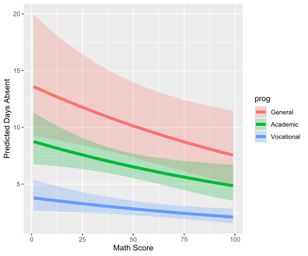
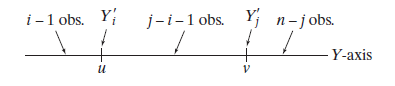

- 4. Expectation
- 4.1 Expectation of a Random Variable
- 4.2 Properties of Expectations
- 4.3 Variance and Covariance
- 4.4 Expectation and Variance of Important Random Variables
- 4.5 Conditional Expectation
- 4.6 Technical Appendix
- 4.7 Exercises
- 4.8 Negative binomial (or gamma-Poisson) distribution and gene expression counts modeling
- 4.9 Beta distribution and Order Statistics
- References
4. Expectation
4.1 Expectation of a Random Variable
The expected value, mean or first moment of \(X\) is defined to be
\[ \mathbb{E}(X) = \int x \; dF(x) = \begin{cases} \sum_x x f(x) &\text{if } X \text{ is discrete} \\ \int x f(x)\; dx &\text{if } X \text{ is continuous} \end{cases} \]
assuming that the sum (or integral) is well-defined. We use the following notation to denote the expected value of \(X\):
\[ \mathbb{E}(X) = \mathbb{E}X = \int x\; dF(x) = \mu = \mu_X \]
The expectation is a one-number summary of the distribution. Think of \(\mathbb{E}(X)\) as the average value you’d obtain if you computed the numeric average \(n^{-1} \sum_{i=1}^n X_i\) for a large number of IID draws \(X_1, \dots, X_n\). The fact that \(\mathbb{E}(X) \approx n^{-1} \sum_{i=1}^n X_i\) is a theorem called the law of large numbers which we will discuss later. We use \(\int x \; dF(x)\) as a convenient unifying notation between the discrete case \(\sum_x x f(x)\) and the continuous case \(\int x f(x) \; dx\) but you should be aware that \(\int x \; dF(x)\) has a precise meaning discussed in real analysis courses.
To ensure that \(\mathbb{E}(X)\) is well defined, we say that \(\mathbb{E}(X)\) exists if \(\int_x |x| \; dF_X(x) < \infty\). Otherwise we say that the expectation does not exist. From now on, wheneverwe discuss expectations, we implicitly assume they exist.
Theorem 4.6 (The rule of the lazy statician). Let \(Y = r(X)\). Then
\[ \mathbb{E}(Y) = \mathbb{E}(r(X)) = \int r(x) \; dF_X(x) \]
As a special case, let \(A\) be an event and let \(r(x) = I_A(x)\), where \(I_A(x) = 1\) if \(x \in A\) and \(I_A(x) = 0\) otherwise. Then
\[ \mathbb{E}(I_A(X)) = \int I_A(x) f_X(x) dx = \int_A f_X(x) dx = \mathbb{P}(X \in A) \]
In other words, probability is a special case of expectation.
Functions of several variables are handled in a similar way. If \(Z = r(X, Y)\) then
\[ \mathbb{E}(Z) = \mathbb{E}(r(X, Y)) = \int \int r(x, y) \; dF(x, y) \]
The \(k\)-th moment of \(X\) is defined to be \(\mathbb{E}(X^k)\), assuming that \(\mathbb{E}(|X|^k) < \infty\). We shall rarely make much use of moments beyond \(k = 2\).
4.2 Properties of Expectations
Theorem 4.10. If \(X_1, \dots, X_n\) are random variables and \(a_1, \dots, a_n\) are constants, then
\[ \mathbb{E}\left( \sum_i a_i X_i \right) = \sum_i a_i \mathbb{E}(X_i) \]
Theorem 4.12. Let \(X_1, \dots, X_n\) be independent random variables. Then,
\[ \mathbb{E}\left(\prod_i X_i \right) = \prod_i \mathbb{E}(X_i) \]
Notice that the summation rule does not require independence but the product does.
4.3 Variance and Covariance
Let \(X\) be a random variable with mean \(\mu\). The variance of \(X\) – denoted by \(\sigma^2\) or \(\sigma_X^2\) or \(\mathbb{V}(X)\) or \(\mathbb{V}X\) – is defined by
\[ \sigma^2 = \mathbb{E}(X - \mu)^2 = \int (x - \mu)^2\; dF(x) \]
assuming this expectation exists. The standard deviation is \(\text{sd}(X) = \sqrt{\mathbb{V}(X)}\) and is also denoted by \(\sigma\) and \(\sigma_X\).
Theorem 4.14. Assuming the variance is well defined, it has the following properties:
\(\mathbb{V}(X) = \mathbb{E}(X^2) - \mathbb{E}(X)^2\)
If \(a\) and \(b\) are constants then \(\mathbb{V}(aX + b) = a^2 \mathbb{V}(X)\)
If \(X_1, \dots, X_n\) are independent and \(a_1, \dots, a_n\) are constants then
\[ \mathbb{V}\left( \sum_{i=1}^n a_iX_i \right) = \sum_{i=1}^n a_i^2 \mathbb{V}(X_i) \]
If \(X_1, \dots, X_n\) are random variables then we define the sample mean to be
\[ \overline{X}_n = \frac{1}{n} \sum_{i=1}^n X_i \]
and the sample variance to be
\[ S_n^2 = \frac{1}{n - 1} \sum_{i=1}^n \left(X_i - \overline{X}_n\right)^2 \]
Theorem 4.16. Let \(X_1, \dots, X_n\) be IID and let \(\mu = \mathbb{E}(X_i)\), \(\sigma^2 = \mathbb{V}(X_i)\). Then
\[ \mathbb{E}\left(\overline{X}_n\right) = \mu, \quad \mathbb{V}\left(\overline{X}_n\right) = \frac{\sigma^2}{n}, \quad \text{and} \quad \mathbb{E}\left(S_n^2\right) = \sigma^2 \]
If \(X\) and \(Y\) are random variables, then the covariance and correlation between \(X\) and \(Y\) measure how strong the linear relationship between \(X\) and \(Y\) is.
Let \(X\) and \(Y\) be random variables with means \(\mu_X\) and \(\mu_Y\) and standard deviation \(\sigma_X\) and \(\sigma_Y\). Define the covariance between \(X\) and \(Y\) by
\[ \text{Cov}(X, Y) = \mathbb{E}[(X - \mu_X)(Y - \mu_Y)] \]
and the correlation by
\[ \rho = \rho_{X, Y} = \rho(X, Y) = \frac{\text{Cov}(X, Y)}{\sigma_X \sigma_Y} \]
Theorem 4.18. The covariance satisfies:
\[ \text{Cov}(X, Y) = \mathbb{E}(XY) - \mathbb{E}(X) \mathbb{E}(Y) \]
The correlation satisfies:
\[ -1 \leq \rho(X, Y) \leq 1 \]
If \(Y = a + bX\) for some constants \(a\) and \(b\) then \(\rho(X, Y) = 1\) if \(b > 0\) and \(\rho(X, Y) = -1\) if \(b < 0\). If \(X\) and \(Y\) are independent, then \(\text{Cov}(X, Y) = \rho = 0\). The converse is not true in general.
Theorem 4.19.
\[ \mathbb{V}(X + Y) = \mathbb{V}(X) + \mathbb{V}(Y) + 2 \text{Cov}(X, Y) \quad \text{ and } \quad \mathbb{V}(X - Y) = \mathbb{V}(X) + \mathbb{V}(Y) - 2 \text{Cov}(X, Y) \]
More generally, for random variables \(X_1, \dots, X_n\),
\[ \mathbb{V}\left( \sum_i a_i X_i \right) = \sum_i a_i^2 \mathbb{V}(X_i) + 2 \sum \sum_{i < j} a_i a_j \text{Cov}(X_i, X_j) \]
4.4 Expectation and Variance of Important Random Variables
\[ \begin{array}{lll} \text{Distribution} & \text{Mean} & \text{Variance} \\ \hline \text{Point mass at } p & a & 0 \\ \text{Bernoulli}(p) & p & p(1-p) \\ \text{Binomial}(n, p) & np & np(1-p) \\ \text{Geometric}(p) & 1/p & (1 - p)/p^2 \\ \text{Cauchy} & \infty & \infty \\ \text{Poisson}(\lambda) & \lambda & \lambda \\ \text{Uniform}(a, b) & (a + b) / 2 & (b - a)^2 / 12 \\ \text{Normal}(\mu, \sigma^2) & \mu & \sigma^2 \\ \text{Exponential}(\beta) & \beta & \beta^2 \\ \text{Gamma}(\alpha, \beta) & \alpha \beta & \alpha \beta^2 \\ \text{Beta}(\alpha, \beta) & \alpha / (\alpha + \beta) & \alpha \beta / ((\alpha + \beta)^2 (\alpha + \beta + 1)) \\ t_\nu & 0 \text{ (if } \nu > 1 \text{)} & \nu / (\nu - 2) \text{ (if } \nu > 2 \text{)} \\ \chi^2_p & p & 2p \\ \text{Multinomial}(n, p) & np & \text{see below} \\ \text{Multivariate Nornal}(\mu, \Sigma) & \mu & \Sigma \\ \end{array} \]
The last two entries in the table are multivariate models which involve a random vector \(X\) of the form
\[ X = \begin{pmatrix} X_1 \\ \vdots \\ X_k \end{pmatrix} \]
The mean of a random vector \(X\) is defined by
\[ \mu = \begin{pmatrix} \mu_1 \\ \vdots \\ \mu_k \end{pmatrix} = \begin{pmatrix} \mathbb{E}(X_1) \\ \vdots \\ \mathbb{E}(X_k) \end{pmatrix} \]
The variance-covariance matrix \(\Sigma\) is defined to be
\[ \Sigma = \begin{pmatrix} \mathbb{V}(X_1) & \text{Cov}(X_1, X_2) & \cdots & \text{Cov}(X_1, X_k) \\ \text{Cov}(X_2, X_1) & \mathbb{V}(X_2) & \cdots & \text{Cov}(X_2, X_k) \\ \vdots & \vdots & \ddots & \vdots \\ \text{Cov}(X_k, X_1) & \text{Cov}(X_k, X_2) & \cdots & \mathbb{V}(X_k) \end{pmatrix} \]
If \(X \sim \text{Multinomial}(n, p)\) then
\[ \mathbb{E}(X) = np = n(p_1, \dots, p_k) \quad \text{and} \quad \mathbb{V}(X) = \begin{pmatrix} np_1(1 - p_1) & -np_1p_2 & \cdots & np_1p_k \\ -np_2p_1 & np_2(1 - p_2) & \cdots & np_2p_k \\ \vdots & \vdots & \ddots & \vdots \\ -np_kp_1 & -np_kp_2 & \cdots & np_k(1 - p_k) \end{pmatrix} \]
To see this:
- Note that the marginal distribution of any one component is \(X_i \sim \text{Binomial}(n, p_i)\), so \(\mathbb{E}(X_i) = np_i\) and \(\mathbb{V}(X_i) = np_i(1 - p_i)\).
- Note that, for \(i \neq j\), \(X_i + X_j \sim \text{Binomial}(n, p_i + p_j)\), so \(\mathbb{V}(X_i + X_j) = n(p_i + p_j)(1 - (p_i + p_j))\).
- Using the formula for the covariance of a sum, for \(i \neq j\),
\[ \mathbb{V}(X_i + X_j) = \mathbb{V}(X_i) + \mathbb{V}(X_j) + 2 \text{Cov}(X_i, X_j) = np_i(1 - p_i) + np_j(1 - p_j) + 2 \text{Cov}(X_i, X_j) \]
Equating the last two formulas we get a formula for the covariance, \(\text{Cov}(X_i, X_j) = -np_ip_j\).
Finally, here’s a lemma that can be useful for finding means and variances of linear combinations of multivariate random vectors.
Lemma 4.20. If \(a\) is a vector and \(X\) is a random vector with mean \(\mu\) and variance \(\Sigma\) then
\[ \mathbb{E}(a^T X) = a^T \mu \quad \text{and} \quad \mathbb{V}(a^T X) = a^T \Sigma a \]
If \(A\) is a matrix then
\[ \mathbb{E}(A X) = A \mu \quad \text{and} \quad \mathbb{V}(AX) = A \Sigma A^T \]
4.5 Conditional Expectation
The conditional expectation of \(X\) given \(Y = y\) is
\[ \mathbb{E}(X | Y = y) = \begin{cases} \sum x f_{X | Y}(x | y) &\text{ discrete case} \\ \int x f_{X | Y}(x | y) dy &\text{ continuous case} \end{cases} \]
If \(r\) is a function of \(x\) and \(y\) then
\[ \mathbb{E}(r(X, Y) | Y = y) = \begin{cases} \sum r(x, y) f_{X | Y}(x | y) &\text{ discrete case} \\ \int r(x, y) f_{X | Y}(x | y) dy &\text{ continuous case} \end{cases} \]
While \(\mathbb{E}(X)\) is a number, \(\mathbb{E}(X | Y = y)\) is a function of \(y\). Before we observe \(Y\), we don’t know the value of \(\mathbb{E}(X | Y = y)\) so it is a random variable which we denote \(\mathbb{E}(X | Y)\). In other words, \(\mathbb{E}(X | Y)\) is the random variable whose value is \(\mathbb{E}(X | Y = y)\) when \(Y\) is observed as \(y\). Similarly, \(\mathbb{E}(r(X, Y) | Y)\) is the random variable whose value is \(\mathbb{E}(r(X, Y) | Y = y)\) when \(Y\) is observed as \(y\).
Theorem 4.23 (The rule of iterated expectations). For random variables \(X\) and \(Y\), assuming the expectations exist, we have that
\[ \mathbb{E}[\mathbb{E}(Y | X)] = \mathbb{E}(Y) \quad \text{and} \quad \mathbb{E}[\mathbb{E}(X | Y)] = \mathbb{E}(X) \]
More generally, for any function \(r(x, y)\) we have
\[ \mathbb{E}[\mathbb{E}(r(X, Y) | X)] = \mathbb{E}(r(X, Y)) \quad \text{and} \quad \mathbb{E}[\mathbb{E}(r(X, Y) | Y)] = \mathbb{E}(r(X, Y)) \]
Proof. We will prove the first equation.
\[ \begin{align} \mathbb{E}[\mathbb{E}(Y | X)] &= \int \mathbb{E}(Y | X = x) f_X(x) dx = \int \int y f(y | x) dy f(x) dx \\ &= \int \int y f(y|x) f(x) dx dy = \int \int y f(x, y) dx dy = \mathbb{E}(Y) \end{align} \]
The conditional variance is defined as
\[ \mathbb{V}(Y | X = x) = \int (y - \mu(x))^2 f(y | x) dx \]
where \(\mu(x) = \mathbb{E}(Y | X = x)\).
Theorem 4.26. For random variables \(X\) and \(Y\),
\[ \mathbb{V}(Y) = \mathbb{E}\mathbb{V}(Y | X) + \mathbb{V} \mathbb{E} (Y | X)\]
4.6 Technical Appendix
4.6.1 Expectation as an Integral
The integral of a measurable function \(r(x)\) is defined as follows. First suppose that \(r\) is simple, meaning that it takes finitely many values \(a_1, \dots, a_k\) over a partition \(A_1, \dots, A_k\). Then \(\int r(x) dF(x) = \sum_{i=1}^k a_i \mathbb{P}(r(X) \in A_i)\). The integral of a positive measurable function \(r\) is defined by \(\int r(x) dF(x) = \lim_i \int r_i(x) dF(x)\), where \(r_i\) is a sequence of simple functions such that \(r_i(x) \leq r(x)\) and \(r_i(x) \rightarrow r(x)\) as \(i \rightarrow \infty\). This does not depend on the particular sequence. The integral of a measurable function \(r\) is defined to be \(\int r(x) dF(x) = \int r^+(x) dF(x) - \int r^-(x) dF(x)\) assuming both integrals are finite, where \(r^+(x) = \max \{ r(x), 0 \}\) and \(r^-(x) = \min\{ r(x), 0 \}\).
4.6.2 Moment Generating Functions
The moment generating function (mgf) or Laplace transform of \(X\) is defined by
\[ \psi_X(t) = \mathbb{E}(e^{tX}) = \int e^{tx} dF(x) \]
where \(t\) varies over the real numbers.
In what follows, we assume the mgf is well defined for all \(t\) in small neighborhood of 0. A related function is the characteristic function, defined by \(\mathbb{E}(e^{itX})\) where \(i = \sqrt{-1}\). This function is always defined for all \(t\). The mgf is useful for several reasons. First, it helps us compute the moments of a distribution. Second, it helps us find the distribution of sums of random variables. Third, it is used to prove the central limit theorem.
When the mgf is well defined, it can be shown that we can interchange the operations of differentiation and “taking expectation.” This leads to
\[ \psi'(0) = \left[ \frac{d}{dt} \mathbb{E} e^{tX} \right]_{t = 0} = \mathbb{E} \left[ \frac{d}{dt} e^{tX} \right]_{t = 0} = \mathbb{E}[X e^{tX}]_{t = 0} = \mathbb{E}(X) \]
By taking further derivatives we conclude that \(\psi^{(k)}(0) = \mathbb{E}(X^k)\). This gives us a method for computing the moments of a distribution.
Lemma 4.30. Properties of the mgf.
- If \(Y = aX + b\) then $_Y(t) = e^{bt} _X(at) $
- if \(X_1, \dots, X_n\) are independent and \(Y = \sum_i X_i\) then \(\psi_Y(t) = \prod_i \psi_{i}(t)\), where \(\psi_i\) is the mgf of \(X_i\).
Theorem 4.32. Let \(X\) and \(Y\) be random variables. If \(\psi_X(t) = \psi_Y(t)\) for all \(t\) in an open interval around 0, then \(X \overset{d}= Y\).
Moment Generating Function for Some Common Distributions
\[ \begin{array}{ll} \text{Distribution} & \text{mgf} \\ \hline \text{Bernoulli}(p) & pe^t + (1 - p) \\ \text{Binomial}(n, p) & (pe^t + (1 - p))^n \\ \text{Poisson}(\lambda) & e^{\lambda(e^t - 1)} \\ \text{Normal}(\mu, \sigma^2) & \exp\left(\mu t + \frac{\sigma^2 t^2}{2} \right) \\ \text{Gamma}(\alpha, \beta) & \left( \frac{\beta}{\beta - t} \right)^\alpha \text{ for } t < \beta \end{array} \]
4.7 Exercises
Exercise 4.7.1. Suppose we play a game where we start with \(c\) dollars. On each play of the game you either double your money or half your money, with equal probability. What is your expected fortune after \(n\) trials?
Solution. Let the random variables \(X_i\) be the fortune after the \(i\)-th trial, \(X_0 = c\) always taking the value \(c\). Then:
\[ \mathbb{E}[X_{i + 1} | X_i = x] = 2x \cdot \frac{1}{2} + \frac{x}{2} \cdot \frac{1}{2} = \frac{5}{4}x \]
Taking the expectation on \(X_i\) on both sides (i.e. integrating over \(F_{X_i}(x)\)),
\[ \mathbb{E}(\mathbb{E}[X_{i + 1} | X_i = x]) = \frac{5}{4} \mathbb{E}(X_i) \Longrightarrow \mathbb{E}(X_{i+1}) = \frac{5}{4} \mathbb{E}(X_i)\]
Therefore, by induction,
\[ \mathbb{E}(X_n) = \left(\frac{5}{4}\right)^n c \]
Note that this is not a martingale, as in the traditional double-or-nothing formulation – the expected value goes up at each iteration.
Exercise 4.7.2. Show that \(\mathbb{V}(X) = 0\) if and only if there is a constant \(c\) such that \(\mathbb{P}(X = c) = 1\).
Solution. We have \(\mathbb{V}(X) = \mathbb{E}[(X - \mathbb{E}(X))^2]\):
\[ \mathbb{V}(X) = \int (x - \mu_X)^2 dF_X(x) \]
Since \((x - \mu_X)^2 \geq 0\), in order for the variance to be 0 we must have the integrand be zero with probability 1, i.e. \(\mathbb{P}(X = \mu_X) = 1\).
Exercise 4.7.3. Let \(X_1, \dots, X_n \sim \text{Uniform}(0, 1)\) and let \(Y_n = \max \{ X_1, \dots, X_n \}\). Find \(\mathbb{E}(Y_n)\).
Solution. The CDF of \(Y_n\), for \(0 \leq y \leq 1\), is:
\[ F_{Y_n}(y) = \mathbb{P}(Y_n \leq y) = \prod_{i=1}^n \mathbb{P}(X_i \leq y) = y^n \]
so its PDF is \(f_{Y_n}(y) = F'_{Y_n}(y) = n y^{n-1}\) for \(0 \leq y \leq 1\).
The expected value of \(Y_n\) then is
\[ \mathbb{E}(Y_n) = \int_0^1 y f_{Y_n}(y) dy = \int_0^1 n y^n dy = \frac{n}{n+1} \]
Exercise 4.7.4. A particle starts at the origin of the real line and moves along the line in jumps of one unit. For each jump the probability is \(p\) that the particle will move one unit to the left and the probability is \(1 - p\) that the particle will jump one unit to the right. Let \(X_n\) be the position of the particle after \(n\) units. Find \(\mathbb{E}(X_n)\) and \(\mathbb{V}(X_n)\). (This is known as a random walk.)
Solution.
We can define \(X_n = \sum_{i=1}^n (1 - 2Y_i)\), where \(Y_i \sim \text{Bernoulli}(p)\) and the \(Y_i\)’s are independent random variables representing the direction of each jump.
We then have:
\[ \mathbb{E}(X_n) = \sum_{i=1}^n \mathbb{E}(1 - 2Y_i) = \sum_{i=1}^n (1 - 2p) = n(1 - 2p) \]
and
\[ \mathbb{V}(X_n) = \sum_{i=1}^n \mathbb{V}(1 - 2Y_i) \sum_{i=1}^n 4\mathbb{V}(Y_i) = 4np(1 - p) \]
Exercise 4.7.5. A fair coin is tossed until a head is obtained. What is the expected number of tosses that will be required?
Solution. The number of tosses follows a geometric distribution, \(X \sim \text{Geom}(p)\), where \(p\) is the probability of heads. Let’s deduce its expected value, rather than use it as a known fact (\(\mathbb{E}(X) = 1/p\)). The PDF is
\[ f_X(k) = p (1 - p)^{k - 1}, \quad k > 0 \]
The expected value for \(X\) is
\[ \begin{align} \mathbb{E}(X) &= \sum_{k=1}^\infty k p (1 - p)^{k - 1} \\ &= \sum_{k=1}^\infty p(1-p)^{k-1} + \sum_{k=2}^\infty (k - 1) p(1-p)^{k - 1} \\ &= p \left( 1 + (1 - p) + (1 - p)^2 + \dots \right) + \sum_{k=1}^\infty k p(1-p)^k \\ &= p \left(\frac{1}{1 - (1 - p)}\right) + (1 - p) \sum_{k=1}^\infty k p(1-p)^{k - 1} \\ &= 1 + (1 - p) \mathbb{E}(X) \end{align} \]
from where we get \(\mathbb{E}(X) = 1 / p\).
Exercise 4.7.6. Prove Theorem 4.6 for discrete random variables.
Let \(Y = r(X)\). Then
\[ \mathbb{E}(Y) = \mathbb{E}(r(X)) = \int r(x) \; dF_X(x) \]
Solution. The result is immediate from the definition of expectation:
\[ Y(\omega) = r(X(\omega)) = r(x) \quad \forall \omega : X(\omega) = x \]
and so
\[ \mathbb{E}(Y) = \int r(x) dF_x(x) \]
Exercise 4.7.7. Let \(X\) be a continuous random variable with CDF \(F\). Suppose that \(\mathbb{P}(X > 0) = 1\) and that \(\mathbb{E}(X)\) exists. Show that \(\mathbb{E}(X) = \int_0^\infty \mathbb{P}(X > x) dx\).
Hint: Consider integrating by parts. The following fact is helpful: if \(\mathbb{E}(X)\) exists then \(\lim_{x \rightarrow +\infty} x | 1 - F(x) | = 0\).
Solution. Let’s prove the following, slightly more general, lemma.
Lemma: For every continuous random variable \(X\),
\[ \mathbb{E}(X) = \int_0^\infty (1 - F_X(y)) dy - \int_{-\infty}^0 F_X(y) dy \]
Proof:
\[ \begin{align} \mathbb{E}(X) &= \int_{-\infty}^\infty x f_X(x) dx \\ &= \int_{-\infty}^0 \int_x^0 -f_X(x) dy dx + \int_0^\infty \int_0^x f_X(x) dy dx \\ &= -\int_{-\infty}^0 \int_{-\infty}^y f_X(x) dx dy + \int_0^\infty \int_y^\infty f_X(x) dx dy \\ &= -\int_{\infty}^0 \mathbb{P}(X \leq y) dy + \int_0^\infty \mathbb{P}(X \geq y) dy \\ &= \int_0^\infty (1 - F_X(y)) dy - \int_{-\infty}^0 F_X(y) dy \end{align} \]
The result follows by imposing \(\mathbb{P}(X > 0) = 1\), which implies \(\int_{-\infty}^0 F_X(y) dy = 0\).
Exercise 4.7.8. Prove Theorem 4.16.
Let \(X_1, \dots, X_n\) be IID and let \(\mu = \mathbb{E}(X_i)\), \(\sigma^2 = \mathbb{V}(X_i)\). Then
\[ \mathbb{E}\left(\overline{X}_n\right) = \mu, \quad \mathbb{V}\left(\overline{X}_n\right) = \frac{\sigma^2}{n}, \quad \text{and} \quad \mathbb{E}\left(S_n^2\right) = \sigma^2 \]
Solution.
For the expected value of sample mean:
\[ \mathbb{E}\left(\overline{X}_n\right) = \mathbb{E}\left( \frac{1}{n} \sum_{i=1}^n X_i \right) = \frac{1}{n} \sum_{i=1}^n \mathbb{E}(X_i) = \frac{1}{n} n\mu = \mu \]
For the variance of sample mean:
\[ \mathbb{V}\left(\overline{X}_n\right) = \mathbb{V}\left( \frac{1}{n} \sum_{i=1}^n X_i \right) = \frac{1}{n^2} \sum_{i=1}^n \mathbb{V}(X_i) = \frac{1}{n^2} n \sigma^2 = \frac{\sigma^2}{n} \]
For the expected value of sample variance:
\[ \begin{align} \mathbb{E}(S_n^2) &= \mathbb{E}\left(\frac{1}{n - 1} \sum_{i=1}^n \left(X_i - \overline{X}_n\right)^2 \right) \\ &= \frac{1}{n - 1} \mathbb{E} \left( \sum_{i=1}^n \left(X_i - \overline{X}_n\right)^2 \right) \\ &= \frac{1}{n - 1} \mathbb{E} \left( \sum_{i=1}^n \left(X_i^2 - 2 X_i \overline{X}_n + \overline{X}_n^2\right) \right) \\ &= \frac{1}{n - 1} \mathbb{E} \left( \sum_{i=1}^n X_i^2 - 2 \overline{X}_n \sum_{i=1}^n X_i + n \overline{X}_n^2 \right) \\ &= \frac{1}{n - 1} \mathbb{E} \left( \sum_{i=1}^n X_i^2 - 2 \overline{X}_n \cdot n \overline{X}_n + n \overline{X}_n^2 \right) \\ &= \frac{1}{n - 1} \mathbb{E} \left( \sum_{i=1}^n X_i^2 - n \overline{X}_n^2 \right) \\ &= \frac{1}{n - 1} \left( \sum_{i=1}^n \mathbb{E}(X_i^2) - n \mathbb{E}\left( \overline{X}_n^2 \right) \right) \\ &= \frac{1}{n - 1} \left( \sum_{i=1}^n \left(\mathbb{V}(X_i) + (\mathbb{E}(X_i))^2 \right) - n \left(\mathbb{V}\left( \overline{X}_n \right) + \left(\mathbb{E}\left(\overline{X}_n\right)\right)^2 \right)\right) \\ &= \frac{1}{n -1} \left( n \left( \sigma^2 + \mu^2\right) - n \left(\frac{\sigma^2}{n} + \mu^2 \right) \right) \\ &= \sigma^2 \end{align} \]
Exercise 4.7.9 (Computer Experiment). Let \(X_1, \dots, X_n\) be \(N(0, 1)\) random variables and let \(\overline{X}_n = n^{-1} \sum_{i=1}^n X_i\). Plot \(\overline{X}_n\) versus \(n\) for \(n = 1, \dots, 10,000\). Repeat for \(X_1, \dots, X_n \sim \text{Cauchy}\). Explain why there is such a difference.
import numpy as np
from scipy.stats import norm, cauchy
np.random.seed(0)
N = 10000
X = norm.rvs(size=N)
Y = cauchy.rvs(size = N)import matplotlib.pyplot as plt
%matplotlib inline
nn = np.arange(1, N + 1)
plt.figure(figsize=(12, 8))
ax = plt.subplot(2, 1, 1)
ax.plot(nn, np.cumsum(X) / nn)
ax.set_title('N(0, 1)')
ax.set_xlabel('n')
ax.set_ylabel(r'$\overline{X}_n$')
ax = plt.subplot(2, 1, 2)
ax.plot(nn, np.cumsum(Y) / nn)
ax.set_title('Cauchy')
ax.set_xlabel('n')
ax.set_ylabel(r'$\overline{X}_n$')
plt.tight_layout()
plt.show()
png
The mean on the Cauchy distribution is famously undefined: \(\overline{X}_ n\) is not going to converge.
Exercise 4.7.10. Let \(X \sim N(0, 1)\) and let \(Y = e^X\). Find \(\mathbb{E}(Y)\) and \(\mathbb{V}(Y)\).
Solution.
The CDF of \(Y\) is, for \(y > 0\):
\[ F_Y(y) = \mathbb{P}(Y \leq y) = \mathbb{P}(X \leq \log y) = \Phi(\log y) \]
and so the PDF is
\[ f_Y(y) = F'_Y(y) = \frac{d}{dy} \Phi(\log y) = \frac{d \Phi(\log y)}{d \log y} \frac{d \log y}{dy} = \frac{\phi(\log y)}{y}\]
The expected value is
\[ \mathbb{E}(Y) = \int y f_Y(y) dy = \int_0^\infty y \frac{\phi(\log y)}{y} dy = \int_0^\infty \phi(\log y)\; dy = \sqrt{e}\]
The expected value of \(Y^2\) is
\[ \mathbb{E}(Y^2) = \int y^2 f_Y(y) dy = \int_0^\infty y^2 \frac{\phi(\log y)}{y} dy = \int_0^\infty y \phi(\log y)\; dy = e^2\]
and so the variance is
\[ \mathbb{V}(Y) = \mathbb{E}(Y^2) - \mathbb{E}(Y)^2 = e(e - 1) \]
Exercise 4.7.11 (Computer Experiment: Simulating the Stock Market). Let \(Y_1, Y_2, \dots\) be independent random variables such that \(\mathbb{P}(Y_i = 1) = \mathbb{P}(Y_i = -1) = 1/2\). Let \(X_n = \sum_{i=1}^n Y_i\). Think of \(Y_i = 1\) as “the stock price increased by one dollar” \(Y_i = -1\) as “the stock price decreased by one dollar” and \(X_n\) as the value of the stock on day \(n\).
(a) Find \(\mathbb{E}(X_n)\) and \(\mathbb{V}(X_n)\).
(b) Simulate \(X_n\) and plot \(X_n\) versus \(n\) for \(n = 1, 2, \dots, 10,000\). Repeat the whole simulation several times. Notice two things. First, it’s easy to “see” patterns in the sequence even though it is random. Second, you will find that the runs look very different even though they were generated the same way. How do the calculations in (a) explain the second observation?
Solution.
(a) We have:
\[ \mathbb{E}(X_n) = \mathbb{E}\left( \sum_{i=1}^n Y_i \right) = \sum_{i=1}^n \mathbb{E}(Y_i) = 0 \]
and
\[ \begin{align} \mathbb{E}(X_n^2) &= \mathbb{E}\left( \left( \sum_{i=1}^n Y_i \right)^2 \right) \\ &= \mathbb{E}\left( \sum_{i=1}^n Y_i^2 + \sum_{i=1}^n \sum_{j = 1, j \neq i}^n Y_i Y_j \right) \\ &= \sum_{i=1}^n \mathbb{E}(Y_i^2) + \sum_{i=1}^n \sum_{j = 1, j \neq i}^n \mathbb{E}(Y_i Y_j) \\ &= \sum_{i=1}^n 1 + \sum_{i=1}^n \sum_{j = 1, j \neq i}^n 0 \\ &= n \end{align} \]
so
\[\mathbb{V}(X_n) = \mathbb{E}(X_n^2) - \mathbb{E}(X_n)^2 = n\]
(b)
import numpy as np
from scipy.stats import norm, bernoulli
N = 10000
B = 20
Y = 2 * bernoulli.rvs(p=1/2, loc=0, size=(B, N), random_state=0) - 1
X = np.cumsum(Y, axis=1)import matplotlib.pyplot as plt
%matplotlib inline
plt.figure(figsize=(12, 8))
nn = np.arange(1, N + 1)
z = norm.ppf(0.975)
plt.plot(nn, z * np.sqrt(nn), color='red')
plt.plot(nn, -z * np.sqrt(nn), color='red')
plt.fill_between(nn, z * np.sqrt(nn), -z * np.sqrt(nn), color='red', alpha=0.05)
for b in range(B):
plt.plot(nn, X[b])
plt.show()
png
The standard deviation is \(\sqrt{n}\) – it scales up with the square root of the “time.” The plot above draws \(z_{\alpha / 2} \sqrt{n}\) curves – confidence bands for \(1 - \alpha = 95\%\) – that contain most of the randomly generated path.
Exercise 4.7.12. Prove the formulas given in the table at the beginning of Section 4.4 for the Bernoulli, Poisson, Uniform, Exponential, Gamma, and Beta. Here are some hints. For the mean of the Poisson, use the fact that \(e^a = \sum_{x=0}^a a^x / x!\). To compute the variance, first compute \(\mathbb{E}(X(X - 1))\). For the mean of the Gamma, it will help to multiply and divide by \(\Gamma(\alpha + 1) / \beta^{\alpha + 1}\) and use the fact that a Gamma density integrates to 1. For the Beta, multiply and divide by \(\Gamma(\alpha + 1) \Gamma(\beta) / \Gamma(\alpha + \beta + 1)\).
Solution.
We will do all expressions in the table instead (other than multinomial and multivariate normal, where proofs are already provided in the book).
Point mass at \(p\). Let \(X\) have a point mass at \(p\). Then:
- \(\mathbb{E}(X) = p \cdot 1 = p\)
- \(\mathbb{E}(X^2) = p^2 \cdot 1 = p^2\)
- \(\mathbb{V}(X) = \mathbb{E}(X^2) - \mathbb{E}(X)^2 = p^2 - p^2 = 0\)
Bernoulli. Let \(X \sim \text{Bernoulli}(p)\). Then:
- \[\mathbb{E}(X) = 1 \cdot p + 0 \cdot (1 - p) = p \]
- \[\mathbb{E}(X^2) = 1 \cdot p + 0 \cdot (1 - p) = p\]
- \[\mathbb{V}(X) = \mathbb{E}(X^2) - \mathbb{E}(X)^2 = p(1 - p)\]
Binomial. Let \(X \sim \text{Binomial}(n, p)\). Then \(X = \sum_{i=1}^n Y_i\), where \(Y_i \sim \text{Bernoulli}(p)\) are IID random variables.
- \[\mathbb{E}(X) = \mathbb{E}\left( \sum_{i=1}^n Y_i \right) = \sum_{i=1}^n \mathbb{E}(Y_i) = np \]
- \[\mathbb{V}(X) = \mathbb{V}\left(\sum_{i=1}^n Y_i \right) = \sum_{i=1}^n \mathbb{V}(Y_i) = np(1-p) \]
Geometric. Let \(X \sim \text{Geometric}(p)\). Then:
\[ \begin{align} \mathbb{E}(X) &= \sum_{k=1}^\infty k p (1 - p)^{k - 1} \\ &= \sum_{k=1}^\infty p(1-p)^{k-1} + \sum_{k=2}^\infty (k - 1) p(1-p)^{k - 1} \\ &= p \left( 1 + (1 - p) + (1 - p)^2 + \dots \right) + \sum_{k=1}^\infty k p(1-p)^k \\ &= p \left(\frac{1}{1 - (1 - p)}\right) + (1 - p) \sum_{k=1}^\infty k p(1-p)^{k - 1} \\ &= 1 + (1 - p) \mathbb{E}(X) \end{align} \]
Solving for the expectation, we get \(\mathbb{E}(X) = 1/p\).
We also have:
\[ \begin{align} \mathbb{E}(X^2) &= \sum_{k=1}^\infty k^2 p (1 - p)^{k - 1} \\ &= \sum_{k=1}^\infty k p(1-p)^{k-1} + \sum_{k=2}^\infty (k^2 - k) p(1-p)^{k - 1} \\ &= \mathbb{E}(X) + (1 - p) \sum_{k=1}^\infty (k^2 + k) p(1-p)^{k - 1} \\ &= \mathbb{E}(X) + (1 - p) \mathbb{E}(X) + (1 - p) \sum_{k=1}^\infty k^2 p(1-p)^{k-1} \\ &= \frac{2 - p}{p} + (1 - p) \mathbb{E}(X^2) \end{align} \]
Solving for the expectation, we get \(\mathbb{E}(X^2) = (2 - p) / p^2\).
Finally,
\[ \mathbb{V}(X) = \mathbb{E}(X^2) - \mathbb{E}(X)^2 = \frac{2 - p}{p^2} - \frac{1}{p^2} = \frac{1 - p}{p^2} \]
Cauchy. Let \[f_X(x) = \frac{1}{\pi(1+x^2)},\quad -\infty<x<\infty\]. Then: \[\mathbb{E}|X|=\int_{-\infty}^{\infty}\frac{|x|}{\pi(1+x^2)}dx=\frac{2}{\pi}\int_{0}^{\infty}\frac{x}{1+x^2}dx=\frac{2}{\pi}\frac{\log(1+x^2)}{2}\bigg|_{0}^{\infty}=\infty\] so \(\mathbb{E}X\) does not exist.
Poisson. Let \(X \sim \text{Poisson}(\lambda)\). Then:
\[ \mathbb{E}(X) = \sum_{k=0}^\infty k \frac{\lambda^k e^{-\lambda}}{k!} = \lambda e^{-\lambda} \sum_{k=1}^\infty \frac{\lambda^{k - 1} }{(k - 1)!} = \lambda e^{-\lambda} \sum_{k=0}^\infty \frac{\lambda^k}{k!} = \lambda e^{-\lambda} e^{\lambda} = \lambda \]
\[ \mathbb{E}(X^2) = \sum_{k=0}^\infty k^2 \frac{\lambda^k e^{-\lambda}}{k!} = \lambda \sum_{k=1}^\infty k \frac{\lambda^{k-1} e^{-\lambda} }{(k-1)!} = \lambda \sum_{k=0}^\infty (k + 1) \frac{\lambda^{k} e^{-\lambda} }{k!} = \lambda \mathbb{E}(X + 1) = \lambda(\lambda + 1) \]
\[ \mathbb{V}(X) = \mathbb{E}(X^2) - \mathbb{E}(X)^2 = \lambda^2 + \lambda - \lambda^2 = \lambda \]
Uniform. Let \(X \sim \text{Uniform}(a, b)\). Then:
- \[\mathbb{E}(X) = \int_a^b x \frac{1}{b - a} dx = \frac{a + b}{2}\]
- \[\mathbb{E}(X^2) = \int_a^b x^2 \frac{1}{b - a} dx = \frac{a^2 + ab + b^2}{3}\]
- \[\mathbb{V}(X) = \mathbb{E}(X^2) - \mathbb{E}(X)^2 = \frac{a^2 + ab + b^2}{3} - \frac{a^2 + 2ab + b^2}{4} = \frac{(b - a)^2}{12}\]
Normal. Let \(X \sim N(\mu, \sigma^2)\). Converting into a standard normal, we get \(Z = (X - \mu) / \sigma \sim N(0, 1)\). Then:
- \[ \mathbb{E}(X) = \mathbb{E}(\sigma Z + \mu) = \sigma \mathbb{E}(Z) + \mu = \mu\]
- \[ \mathbb{V}(X) = \mathbb{V}(\sigma Z + \mu) = \sigma^2 \mathbb{V}(Z) = \sigma^2\]
To prove that the expected value \(Z\) is 0, note that the PDF of \(Z\) is even, \(\phi(z) = \phi(-z)\), so
\[ \mathbb{E}(Z) = \int_{-\infty}^\infty z \phi(z) dz = \int_{-\infty}^0 z \phi(z) dz + \int_0^\infty z \phi(z) dz \\ = \int_0^\infty -z \phi(-z) dz + \int_0^\infty z \phi(z) dz = \int_0^\infty (-z + z)\phi(z) = 0 \]
To prove that the variance of \(Z\) is 0, write out the integral explicitly for the expectation of \(Z^2\),
\[ \mathbb{E}(Z^2) = \int_{-\infty}^\infty z^2 \phi(z) dz = \frac{1}{\sqrt{2 \pi}} \int_{-\infty}^\infty z^2 e^{-z^2/2} dz\\ = \left[ \Phi(z) - \frac{1}{\sqrt{2 \pi}} z e^{-z^2/2} \right]_{-\infty}^\infty = \lim_{x \rightarrow +\infty} \Phi(x) - \lim_{x \rightarrow -\infty} \Phi(x) = 1 - 0 = 1 \]
and so
\[\mathbb{V}(Z) = \mathbb{E}(Z^2) - \mathbb{E}(Z)^2 = 1 - 0 = 1\]
Exponential. Let \(X \sim \text{Exponential}(\beta)\). Then:
- \[ \mathbb{E}(X) = \int_0^\infty x \frac{1}{\beta} e^{-x / \beta} dx = \frac{1}{\beta} \int_0^\infty x e^{-x / \beta} dx = \frac{1}{\beta} \beta^2 = \beta\]
- \[\mathbb{E}(X^2) = \int_0^\infty x^2 \frac{1}{\beta} e^{-x / \beta} dx = \frac{1}{\beta} \int_0^\infty x^2 e^{-x / \beta} dx = \frac{1}{\beta} 2\beta^3 = 2 \beta^2 \]
- \[ \mathbb{V}(X) = \mathbb{E}(X^2) - \mathbb{E}(X)^2 = 2\beta^2 - \beta^2 = \beta^2\]
Gamma. Let \(X \sim \text{Gamma}(\alpha, \beta)\). The PDF is
\[ f_X(x) = \frac{\beta^\alpha}{\Gamma(\alpha)} x^{\alpha - 1} e^{-\beta x} \quad \text{for } x > 0 \]
We have:
\[ \begin{align} \mathbb{E}(X) &= \int x f_X(x) dx \\ &= \int_0^\infty x \frac{\beta^\alpha}{\Gamma(\alpha)} x^{\alpha - 1} e^{-\beta x} dx \\ &= \frac{\alpha}{\beta} \int_0^\infty\frac{\beta^{\alpha + 1}}{\Gamma(\alpha + 1)} x^\alpha e^{-\beta x} dx \\ &= \frac{\alpha}{\beta} \end{align} \]
where we used that
- \(\alpha \Gamma(\alpha) = \Gamma(\alpha + 1)\),
- and last integral is the PDF of \(\text{Gamma}(\alpha + 1, \beta)\), integrated over its entire domain.
We also have:
\[ \begin{align} \mathbb{E}(X^2) &= \int x^2 f_X(x) dx \\ &= \int_0^\infty x^2 \frac{\beta^\alpha}{\Gamma(\alpha)} x^{\alpha - 1} e^{-\beta x} dx \\ &= \frac{\alpha (\alpha + 1)}{\beta^2} \int_0^\infty\frac{\beta^{\alpha + 2}}{\Gamma(\alpha + 2)} x^{\alpha + 1} e^{-\beta x} dx \\ &= \frac{\alpha (\alpha + 1)}{\beta^2} \end{align} \]
- \(\alpha(\alpha + 1) \Gamma(\alpha) = \Gamma(\alpha + 2)\),
- and last integral is the PDF of \(\text{Gamma}(\alpha + 2, \beta)\), integrated over its entire domain.
Therefore,
\[ \mathbb{V}(X) = \mathbb{E}(X^2) - \mathbb{E}(X)^2 = \frac{\alpha (\alpha + 1)}{\beta^2} - \frac{\alpha^2}{\beta^2} = \frac{\alpha}{\beta^2} \]
Beta. Let \(X \sim \text{Beta}(\alpha, \beta)\). The PDF is
\[f_X(x) = \frac{\Gamma(\alpha + \beta)}{\Gamma(\alpha) \Gamma(\beta)} x^{\alpha - 1}(1 - x)^{\beta - 1} \quad \text{for } x > 0\]
We have:
\[ \begin{align} \mathbb{E}(X) &= \int x f_X(x) dx \\ &= \int_0^\infty x \frac{\Gamma(\alpha + \beta)}{\Gamma(\alpha) \Gamma(\beta)} x^{\alpha - 1}(1 - x)^{\beta - 1} dx \\ &= \frac{\alpha}{\alpha + \beta} \int_0^\infty \frac{\Gamma(\alpha + \beta + 1)}{\Gamma(\alpha + 1) \Gamma(\beta)} x^{\alpha}(1 - x)^{\beta - 1} dx \\ &= \frac{\alpha}{\alpha + \beta} \end{align} \]
where we used that
- \(\alpha \Gamma(\alpha) = \Gamma(\alpha + 1)\),
- \((\alpha + \beta) \Gamma(\alpha + \beta) = \Gamma(\alpha + \beta + 1)\),
- and the last integral is the PDF of \(\text{Beta}(\alpha + 1, \beta)\), integrated over its entire domain.
We also have:
\[ \begin{align} \mathbb{E}(X^2) &= \int x^2 f_X(x) dx \\ &= \int_0^\infty x^2 \frac{\Gamma(\alpha + \beta)}{\Gamma(\alpha) \Gamma(\beta)} x^{\alpha - 1}(1 - x)^{\beta - 1} dx \\ &= \frac{\alpha (\alpha + 1)}{(\alpha + \beta)(\alpha + \beta + 1)} \int_0^\infty \frac{\Gamma(\alpha + \beta + 2)}{\Gamma(\alpha + 2) \Gamma(\beta)} x^{\alpha + 1}(1 - x)^{\beta - 1} dx \\ &= \frac{\alpha (\alpha + 1)}{(\alpha + \beta)(\alpha + \beta + 1)} \end{align} \]
where we used that
- \(\alpha (\alpha + 1) \Gamma(\alpha) = \Gamma(\alpha + 2)\),
- \((\alpha + \beta) (\alpha + \beta + 1) \Gamma(\alpha + \beta) = \Gamma(\alpha + \beta + 2)\),
- and the last integral is the PDF of \(\text{Beta}(\alpha + 2, \beta)\), integrated over its entire domain.
Therefore,
\[ \mathbb{V}(X) = \mathbb{E}(X^2) - \mathbb{E}(X)^2 = \frac{\alpha (\alpha + 1)}{(\alpha + \beta)(\alpha + \beta + 1)} - \frac{\alpha^2}{(\alpha + \beta)^2} = \frac{\alpha \beta}{(\alpha + \beta)^2 (\alpha + \beta + 1)} \]
t-student. Let \(X \sim t_\nu\). The PDF for the t-student distribution is
\[ f_X(x) = \frac{1}{\sqrt{v \pi}} \frac{\Gamma\left(\frac{\nu + 1}{2}\right)}{\Gamma\left(\frac{\nu}{2}\right)} \frac{1}{\left(1 + \frac{x^2}{\nu} \right)^{(\nu + 1)/2}} \]
Since the PDF is even, \(f_X(x) = f_X(-x)\), the expectation will be 0 when it is defined:
\[ \mathbb{E}(X) = \int_{-\infty}^\infty x f_X(x) dx = \int_{-\infty}^0 x f_X(x) dx + \int_0^\infty x f_X(x) dx \\ = \int_0^\infty -x f_X(-x) dx + \int_0^\infty x f_X(x) dx = \int_0^\infty (-x + x)f_X(x) dx = 0 \]
But
\[ \mathbb{E}(X) = \int_{-\infty}^\infty x f_X(x) dx = \frac{1}{\sqrt{v \pi}} \frac{\Gamma\left(\frac{\nu + 1}{2}\right)}{\Gamma\left(\frac{\nu}{2}\right)} \int_{-\infty}^\infty x \left(1 + \frac{x^2}{\nu} \right)^{-(\nu + 1)/2} dx \]
For the expectation of \(X^2\), assuming it is defined, we have:
\[ \begin{align} \mathbb{E}(X^2) &= \int_{-\infty}^\infty x^2 f_X(x) dx \\ &= \frac{1}{\sqrt{v \pi}} \frac{\Gamma\left(\frac{\nu + 1}{2}\right)}{\Gamma\left(\frac{\nu}{2}\right)} \int_{-\infty}^\infty x^2 \left( 1 + \frac{x^2}{\nu}\right)^{-(\nu + 1) / 2} dx \\ &= \frac{\nu}{\sqrt{\pi}} \frac{\Gamma\left(\frac{\nu + 1}{2}\right)}{\Gamma\left(\frac{\nu}{2}\right)} \int_0^1 y^{\nu /2 - 2} \left( 1 - y \right)^{1 / 2} dy \\ &= \frac{\nu}{\sqrt{\pi}} \frac{\Gamma\left(\frac{\nu + 1}{2}\right)}{\Gamma\left(\frac{\nu}{2}\right)} \frac{\Gamma\left(\frac{\nu}{2} - 1\right) \Gamma\left(\frac{3}{2}\right)}{\Gamma\left(\frac{\nu + 1}{2}\right)} \\ &= \frac{\nu}{\nu - 2} \end{align} \]
where we used:
- A variable replacement \(y = \left( 1 + \frac{x^2}{\nu} \right)^{-1}\)
- The property that \(\int_0^1 y^{p - 1} (1 - y)^{q - 1} dy = \frac{\Gamma(p) \Gamma(q)}{\Gamma(p + q)}\), since this is the integral of the PDF of \(\Gamma(p, q)\) scaled by a factor of \(\frac{\Gamma(p) \Gamma(q)}{\Gamma(p + q)}\), with \(p = \nu / 2 - 1\), \(q = 3/2\)
- \(\Gamma(3 / 2) = \sqrt{\pi}/2\)
Finally,
\[ \mathbb{V}(X) = \mathbb{E}(X^2) - \mathbb{E}(X)^2 = \frac{\nu}{\nu - 2} \]
Reference: https://math.stackexchange.com/a/1502519
\(\chi^2\) distribution. Let \(X \sim \chi^2_k\). Then \(X\) has the same distributions as the sum of squares of \(k\) IID standard Normal random variables, \(X = \sum_{i=1}^k Z_i^2\), \(Z_i \sim N(0, 1)\).
The expectation of \(X\) can then be computed:
\[ \mathbb{E}(X) = \mathbb{E}\left( \sum_{i=1}^k Z_i^2 \right) = \sum_{i=1}^k \mathbb{E}(Z_i^2) = \sum_{i=1}^k (\mathbb{V}(Z_i) + \mathbb{E}(Z_i)^2) = \sum_{i=1}^k (1 + 0) = k \]
The expectation of \(X^2\) is:
\[ \begin{align} \mathbb{E}(X^2) &= \mathbb{E}\left( \left( \sum_{i=1}^k Z_i^2 \right)^2 \right) \\ &= \mathbb{E}\left( \sum_{i=1}^k Z_i^4 + \sum_{i=1}^k \sum_{j=1; j \neq i}^k Z_i^2 Z_j^2 \right) \\ &= \sum_{i=1}^k \mathbb{E}(Z_i^4) + \sum_{i=1}^k \sum_{j=1; j \neq i}^k \mathbb{E}(Z_i^2) \mathbb{E}(Z_j^2) \end{align} \]
But we have:
\[ \mathbb{E}(Z_i^2) = \mathbb{V}(Z_i) + \mathbb{E}(Z_i)^2 = 1 + 0 = 1 \]
and, using moment generating functions,
\[M_Z(t) = e^{t^2 / 2}\]
and taking the fourth derivative,
\[ M_Z^{(4)}(t) = 3 M_Z^{(2)}(t) + t M_Z^{(3)}(t)\]
Setting \(t = 0\) gives us \(\mathbb{E}(Z_i^4) = 3\).
Replacing it back on the expectation expression for \(X^2\),
\[ \mathbb{E}(X^2) = \sum_{i=1}^k 3 + \sum_{i=1}^k \sum_{j=1; j \neq i}^k 1 \cdot 1 = 3k + k(k-1) = k^2 + 2k \]
Therefore,
\[ \mathbb{V}(X) = \mathbb{E}(X^2) - \mathbb{E}(X)^2 = k^2 + 2k - k^2 = 2k \]
The proofs for the multinomial and mutivariate normal distribution expressions are provided in the book text (and there are notes above).
Exercise 4.7.13. Suppose we generate a random variable \(X\) in the following way. First we flip a fair coin. If the coin is heads, take \(X\) to have a \(\text{Uniform}(0, 1)\) distribution. If the coin is tails, take \(X\) to have a \(\text{Uniform}(3, 4)\) distribution.
(a) Find the mean of \(X\).
(b) Find the standard deviation of \(X\).
Solution. We have \(X = C U_1 + (1 - C)U_2\), where \(U \sim \text{Bernoulli}(1/2)\), \(U_1 \sim \text{Uniform}(0, 1)\) and \(U_2 \sim \text{Uniform}(3,4)\) are all independent.
(a)
\[\mathbb{E}(X) = \mathbb{E}(CU_1 + (1 - C)U_2) = \mathbb{E}(C)\mathbb{E}(U_1) + (1 - \mathbb{E}(C))\mathbb{E}(U_2) = \frac{1}{2} \left(\frac{1}{2} + \frac{7}{2}\right) = 2\]
(b)
\[ X^2 = (CU_1 + (1 - C)U_2)^2 = C^2U_1^2 + (1 - C)^2 U_2^2 + 2C(1 - C)U_1U_2 = C^2U_1^2 + (1 - C)^2 U_2^2 \]
so
\[ \begin{align} \mathbb{E}(X^2) &= \mathbb{E}(C^2)\mathbb{E}(U_1^2) + \mathbb{E}((1 - C)^2) \mathbb{E}(U_2^2) \\ &= \mathbb{E}(C) \mathbb{E}(U_1^2) + \mathbb{E}(1 - C) \mathbb{E}(U_2^2) \\ &= \frac{1}{2} \left( \frac{1}{3} + \frac{37}{3} \right) = \frac{19}{3} \end{align} \]
and then
\[ \mathbb{V}(X) = \mathbb{E}(X^2) - \mathbb{E}(X)^2 = \frac{19}{3} - 2^2 = \frac{7}{3} \]
and so the standard deviation is \(\sqrt{\mathbb{V}(X)} = \sqrt{7/3}\).
Exercise 4.17.14. Let \(X_1, \dots, X_m\) and \(Y_1, \dots, Y_n\) be random variables and let \(a_1, \dots, a_m\) and \(b_1, \dots, b_n\) be constants. Show that
\[ \text{Cov}\left( \sum_{i=1}^m a_i X_i , \sum_{j=1}^n b_j Y_j \right) = \sum_{i=1}^m \sum_{j=1}^n a_i b_j \text{Cov}(X_i, Y_j) \]
Solution. We have:
\[ \begin{align} \text{Cov}\left(\sum_{i=1}^m a_i X_i, Y\right) &= \mathbb{E}\left(\left( \sum_{i=1}^m a_i X_i \right) Y\right) - \mathbb{E}\left( \sum_{i=1}^m a_i X_i \right) \mathbb{E}(Y) \\ &= \sum_{i=1}^m \mathbb{E}(a_i X_i Y) - \left( \sum_{i=1}^m a_i \mathbb{E}(X_i) \right) \mathbb{E}(Y) \\ &= \sum_{i=1}^m \big(\mathbb{E}(a_i X_i Y) - a_i \mathbb{E}(X_i) \mathbb{E}(Y)\big) \\ &= \sum_{i=1}^m a_i \text{Cov}(X_i, Y) \end{align} \]
and, since \(\text{Cov}(A, B) = \text{Cov}(B, A)\),
\[ \text{Cov}\left(X, \sum_{j=1}^n b_j Y_j \right) = \sum_{j=1}^n b_j \text{Cov}(X, Y_j) \]
Applying this for each \(X_i\), we get the result.
Exercise 4.17.15. Let
\[ f_{X, Y} = \begin{cases} \frac{1}{3} (x + y) &\text{if } 0 \leq x \leq 1, 0 \leq y \leq 2 \\ 0 &\text{otherwise} \end{cases}\]
Find \(\mathbb{V}(2X - 3Y + 8)\).
Solution. Let \(r(x, y) = 2x - 3y\). Then:
\[ \mathbb{V}(2X - 3Y + 8) = \mathbb{V}(2X - 3Y) = \mathbb{V}(r(X, Y)) \]
Calculating the expectation of \(r(X, Y)\) and \(r(X, Y)^2\):
\[ \mathbb{E}(r(X, Y)) = \int_0^1 \int_0^2 r(x, y) f(x, y) dy dx = \int_0^1 \int_0^2 \frac{1}{3}(2x - 3y)(x + y) dy dx\\ = \int_0^1 \frac{2}{3}(2x^2 - x - 4) dx = -\frac{23}{9} \]
and
\[ \mathbb{E}(r(X, Y)^2) = \int_0^1 \int_0^2 r(x, y)^2 f(x, y) dy dx = \int_0^1 \int_0^2 \frac{1}{3}(2x - 3y)^2(x + y) dy dx \\ = \int_0^1 \frac{4}{3}(2x^3 - 4x^2 - 2x + 9) dx = \frac{86}{9} \]
and so
\[ \mathbb{V}(r(X, Y)) = \mathbb{E}(r(X, Y)^2) - \mathbb{E}(r(X, Y))^2 = \frac{86}{9} - \frac{23^2}{9^2} = \frac{245}{81} \]
Exercise 4.17.16. Let \(r(x)\) be a function of \(x\) and let \(s(y)\) be a function of \(y\). Show that
\[ \mathbb{E}(r(X) s(Y) | X) = r(X) \mathbb{E}(s(Y) | X) \]
Also, show that \(\mathbb{E}(r(X) | X) = r(X)\).
Solution. We have:
\[ \mathbb{E}(r(X) s(Y) | X = x) = \int r(x) s(y) f(x, y) dy = r(x) \int s(y) f(x, y) dy = r(x) \mathbb{E}(s(Y) | X = x) \]
and so the random variable \(\mathbb{E}(r(X) s(Y) | X)\) takes the same value as the variable \(r(X) \mathbb{E}(s(Y) | X)\) for each \(X = x\) – therefore the random variables are equal.
In particular, when \(s(y) = 1\) for all \(y\), we have \(\mathbb{E}(r(X) | X) = r(X)\).
Exercise 4.17.17. Prove that
\[ \mathbb{V}(Y) = \mathbb{E} \mathbb{V} (Y | X) + \mathbb{V} \mathbb{E} (Y | X) \]
Hint: Let \(m = \mathbb{E}(Y)\) and let \(b(x) = \mathbb{E}(Y | X = x)\). Note that \(\mathbb{E}(b(X)) = \mathbb{E} \mathbb{E}(Y | X) = \mathbb{E}(Y) = m\). Bear in mind that \(b\) is a function of \(x\). Now write
\[\mathbb{V}(Y) = \mathbb{E}((Y - m)^2) = \mathbb{E}(((Y - b(X)) + (b(X) - m))^2)\]
Expand the square and take the expectation. You then have to take the expectation of three terms. In each case, use the rule of iterated expectation, i.e. \(\mathbb{E}(\text{stuff}) = \mathbb{E}(\mathbb{E}(\text{stuff} | X))\).
Solution. We have:
\[ \begin{align} \mathbb{V}(Y) &= \mathbb{E}(Y^2) - \mathbb{E}(Y)^2 \\ &= \mathbb{E}(\mathbb{E}(Y^2 | X)) - \mathbb{E}(\mathbb{E}(Y | X))^2 \\ &= \mathbb{E}\left( \mathbb{V}(Y | X) + \mathbb{E}(Y | X)^2 \right) - \mathbb{E}(\mathbb{E}(Y | X))^2 \\ &= \mathbb{E}(\mathbb{V}(Y | X)) + \left( \mathbb{E}(\mathbb{E}(Y | X)^2) - \mathbb{E}(\mathbb{E}(Y | X))^2 \right) \\ &= \mathbb{E} (\mathbb{V}(Y | X) + \mathbb{V}(\mathbb{E}(Y | X)) \end{align} \]
Exercise 4.17.18. Show that if $(X | Y = y) = c $ for some constant \(c\) then \(X\) and \(Y\) are uncorrelated.
Solution. We have:
\[ \mathbb{E}(XY) = \int \mathbb{E}(XY | Y = y) dF_Y(y) = \int y \mathbb{E}(X | Y = y) dF_Y(y) = \int cy dF_Y(y) = c \; \mathbb{E}(Y)\]
and
\[ \mathbb{E}(X) = \mathbb{E}(\mathbb{E}(X | Y)) = \mathbb{E}(c) = c \]
so \(\mathbb{E}(XY) = \mathbb{E}(X) \mathbb{E}(Y)\), and so \(\text{Cov}(X, Y) = 0\), and so \(X\) and \(Y\) are uncorrelated.
Exercise 4.17.19. This question is to help you understand the idea of sampling distribution. Let \(X_1, \dots, X_n\) be IID with mean \(\mu\) and variance \(\sigma^2\). Let \(\overline{X}_n = n^{-1}\sum_{i=1}^n X_i\). Then \(\overline{X}_n\) is a statistic, that is, a function of the data. Since \(\overline{X}_n\) is a random variable, it has a distribution. This distribution is called the sampling distribution of the statistic. Recall from Theorem 4.16 that \(\mathbb{E}(\overline{X}_n) = \mu\) and \(\mathbb{V}(\overline{X}_n) = \sigma^2 / n\). Don’t confuse the distribution of the data \(f_X\) and the distribution of the statistic \(f_{\overline{X}_n}\). To make this clear, let \(X_1, \dots, X_n \sim \text{Uniform}(0, 1)\). Let \(f_X\) be the density of the \(\text{Uniform}(0, 1)\). Plot \(f_X\). Now let \(\overline{X}_n = n^{-1} \sum_{i=1}^n X_i\). Find \(\mathbb{E}(\overline{X}_n)\) and \(\mathbb{V}(\overline{X}_n)\). Plot them as a function of \(n\). Comment. Now simulate the distribution of \(\overline{X}_n\) for \(n = 1, 5, 25, 100\). Check the simulated values of \(\mathbb{E}(\overline{X}_n)\) and \(\mathbb{V}(\overline{X}_n)\) agree with your theoretical calculations. What do you notice about the sampling distribution of \(\overline{X}_n\) as it increases?
Solution.
\[ \mathbb{E}\left(\overline{X}_n\right) = \mathbb{E}\left(n^{-1} \sum_{i=1}^n X_i \right) = n^{-1} \sum_{i=1}^n \mathbb{E}(X_i) = \frac{1}{2} \]
and
\[ \mathbb{V}\left(\overline{X}_n\right) = \mathbb{V}\left(n^{-1} \sum_{i=1}^n X_i \right) = n^{-2} \sum_{i=1}^n \mathbb{V}(X_i) = \frac{1}{12 n} \]
import numpy as np
np.random.seed(0)
B = 1000
E_overline_X = np.empty(100)
V_overline_X = np.empty(100)
for n in range(1, 101):
X_n = np.random.uniform(low=0, high=1, size=(B, n)).mean(axis=1)
E_overline_X[n - 1] = X_n.mean()
V_overline_X[n - 1] = X_n.var()import matplotlib.pyplot as plt
%matplotlib inline
plt.figure(figsize=(12, 8))
ax = plt.subplot(212)
ax.hlines(0, xmin=-0.5, xmax=0, color='C0')
ax.hlines(1, xmin=0, xmax=1, color='C0')
ax.hlines(0, xmin=1, xmax=1.5, color='C0')
ax.vlines([0, 1], ymin=0, ymax=1, color='C0', linestyle='dashed')
ax.set_xlabel('x')
ax.set_ylabel(r'$f_X(x)$')
ax.set_title('Density of Uniform(0, 1)')
nn = np.arange(1, 101)
ax = plt.subplot(221)
ax.plot(nn, 1/2 * np.ones(100), label='Calculated')
ax.plot(nn, E_overline_X, label='Measured')
ax.set_xlabel('n')
ax.set_ylabel(r'$\mathbb{E}(\overline{X}_n)$')
ax.set_title('Sampling distribution mean')
ax.legend(loc='lower right')
ax = plt.subplot(222)
ax.plot(nn, 1 / (12 * nn), label='Calculated')
ax.plot(nn, V_overline_X, label='Measured')
ax.set_xlabel('n')
ax.set_yscale('log')
ax.set_ylabel(r'$\mathbb{V}(\overline{X}_n)$')
ax.set_title('Sampling distribution variance')
ax.legend(loc='upper right')
plt.tight_layout()
plt.show()
png
Calculated and simulated values agree.
Exercise 4.17.20. Prove Lemma 4.20.
If \(a\) is a vector and \(X\) is a random vector with mean \(\mu\) and variance \(\Sigma\) then
\[ \mathbb{E}(a^T X) = a^T \mu \quad \text{and} \quad \mathbb{V}(a^T X) = a^T \Sigma a \]
If \(A\) is a matrix then
\[ \mathbb{E}(A X) = A \mu \quad \text{and} \quad \mathbb{V}(AX) = A \Sigma A^T \]
Solution.
We have:
\[ \mathbb{E}(a^T X) = \begin{pmatrix} \mathbb{E}(a_1 X_1) \\ \mathbb{E}(a_2 X_2) \\ \cdots \\ \mathbb{E}(a_k X_k) \end{pmatrix} = \begin{pmatrix} a_1 \mathbb{E}(X_1) \\ \mathbb{E}(X_2) \\ \cdots \\ \mathbb{E}(X_k) \end{pmatrix} = a^T \mu \]
and
\[ \mathbb{V}(a^T X) = \mathbb{E}((a^T (X - \mu) (a^T(X - \mu))^T) = \mathbb{E}((a^T (X - \mu) (X - \mu)^T a) = a^T \Sigma a \]
Similarly, for the matrix case,
\[ \mathbb{E}(AX) = \begin{pmatrix} \mathbb{E}\left( \sum_{j=1}^k a_{1, j} X_j \right) \\ \mathbb{E}\left( \sum_{j=1}^k a_{2, j} X_j \right) \\ \cdots \\ \mathbb{E}\left( \sum_{j=1}^k a_{k, j} X_j \right) \\ \end{pmatrix} = \begin{pmatrix} \sum_{j=1}^k a_{1, j} \mathbb{E}(X_j) \\ \sum_{j=1}^k a_{2, j} \mathbb{E}(X_j) \\ \cdots \\ \sum_{j=1}^k a_{k, j} \mathbb{E}(X_j) \\ \end{pmatrix} = A \mu \]
and
\[ \mathbb{V}(A X) = \mathbb{E}((A (X - \mu) (A(X - \mu))^T) = \mathbb{E}((A (X - \mu) (X - \mu)^T A^T) = A \Sigma A^T \]
4.8 Negative binomial (or gamma-Poisson) distribution and gene expression counts modeling
4.8.1 The negative integer exponents binomials
The binomial theorem for positive integer exponents \(n\) can be generalized to negative integer exponents. This gives rise to several familiar Maclaurin series with numerous applications in calculus and other areas of mathematics.
The negative in the name stem from binomial with negative integer exponents. When the binomial has negative integer exponents, such as \[f(x)=(1+x)^{-3}\] we can expand it as a Maclaurin series. The Maclaurin series for \(f(x)\), wherever it converges, can be expressed as \[f(x)=f(0)+f'(0)x+\frac{f''(0)}{2!}x^2+\cdots+\frac{f^{(k)}(x)}{k!}x^k+\cdots\] Since \[f^{(k)}(x)=-3\cdot-4\cdots(-3-k+1)(1+x)^{-3-k}\] then \[f^{(k)}(0)=-3\cdot-4\cdots(-3-k+1)(1+0)^{-3-k}=-3\cdot-4\cdots(-3-k+1)\] So the Maclaurin series becomes \[f(x)=1-3x+\frac{-3\cdot-4}{2!}x^2+\cdots+\frac{-3\cdot-4\cdots(-3-k+1)}{k!}x^k+\cdots\] This converges for \(|x|<1\) by the ratio test.
The above example generalizes immediately for all negative integer exponents \(\alpha\). Let \(\alpha\) be a real number and \(k\) a positive integer. Define \[{\alpha\choose k}=\frac{\alpha(\alpha-1)\cdots(\alpha-k+1)}{k!}=\frac{\alpha!}{k!(\alpha-k)!}\] Let \(n\) be a positive integer. Then \[\begin{align} \frac{1}{(1+x)^n}&=\left(1+x\right)^{-n}\\ &=1-nx+\frac{(-n)(-n-1)}{2}x^2+\cdots+\frac{(-n)(-n-1)\cdots(-n-k+1)}{k!}x^k\\ &=\sum_{k=0}^{\infty}(-1)^k{n+k-1\choose k}x^k \end{align}\] for \(|x|<1\).
Based on the definition of binomial,
\[\begin{align} {x+r-1\choose x}&=\frac{(x+r-1)(x+r-2)\cdots r}{x!}\\ &=(-1)^x\frac{(-x-r+1)(-x-r+2)\cdots (-r)}{x!}\\ &=(-1)^x\frac{(-r-(x-1))(-r-(x-2))\cdots (-r)}{x!}\\ &=(-1)^x\frac{(-r)(-r-1)(-r-2)\cdots (-r-(x-1))}{x!}\\ &=(-1)^x{{-r}\choose x} \end{align}\]
Then
\[\begin{align} 1&=p^rp^{-r}\\ &=p^r(1-q)^{-r}\\ &=p^r\sum_{x=0}^{\infty}{{-r}\choose x}(-q)^{x}\\ &=p^r\sum_{x=0}^{\infty}(-1)^{x}{{-r}\choose x}q^{x}\\ &=\sum_{x=0}^{\infty}{{r+x-1}\choose x}p^rq^{x}\\ &=\sum_{x=0}^{\infty}{{r+x-1}\choose {r-1}}p^r(1-p)^{x}\\ \end{align}\]
4.8.2 The negative binomial distribution derives from the Bernoulli trials and is the sum of i.i.d Geometric distribution
The negative binomial distribution is a discrete probability distribution that models the number of successes (or failures) in a sequence of independent and identically distributed Bernoulli trials before a specified (non-random) number of failures (or successes) (denoted \(r\)) occurs. For example, we can define rolling a \(6\) on a die as a failure, and rolling any other number as a success, and ask how many successful rolls will occur before we see the third failure (\(r = 3\)). In such a case, the probability distribution of the number of non-6s that appear will be a negative binomial distribution. We could similarly use the negative binomial distribution to model the number of days a certain machine works before it breaks down (\(r = 1\)). Or we can model the count number of a specific gene \((x_{iA}, i\in 1,\cdots, M)\) in a library \(A\), \(A\) is the library index. Let \(p\) is the probability of failure (or success) in each trial.
Then \[P_r(X=k)={{k+r-1}\choose{r-1}}(1-p)^kp^{r-1}p={{k+r-1}\choose{r-1}}(1-p)^kp^r\]
Since the Geometric distribution \(P_r(X=k)=p (1 - p)^{k}, k\in (0,\cdots, k+1)\) depicts the number of successes (or failures) (denoted \(k\)) before the first failure (or success), or the total number of trials at the first failure (or success). Then negative binomial distribution is the sum of \(r\) i.i.d Geom.
4.8.3 The Expectation, Variance and Moment-generating function of negative binomial distribution
The Generating Function
By definition, the following is the generating function of the negative binomial distribution, using : \[\begin{align} g(z)&=\sum_{x=0}^{\infty}{{r+x-1}\choose{x}}p^rq^xz^x\\ &=\sum_{x=0}^{\infty}{{r+x-1}\choose{x}}p^r(qz)^x\\ &=p^r\sum_{x=0}^{\infty}(-1)^x{{-r}\choose x}(qz)^x\\ &=p^r\sum_{x=0}^{\infty}{{-r}\choose x}(-qz)^x\\ &=p^r(1-qz)^{-r}\\ &=\frac{p^r}{(1-qz)^{r}}\\ &=\frac{p^r}{(1-(1-p)z)^{r}};\quad z<\frac{1}{1-p}\\ \end{align}\]
The moment generating function of the negative binomial distribution is: \[M(t)=\frac{p^r}{(1-(1-p)e^t)^{r}};\quad t<-\ln(1-p)\]
The Mean:
\[\begin{align} \mathbb E(X)&=g'(1)\\ &=\left(\frac{p^r}{(1-(1-p)z)^{r}}\right)'\bigg|_{z=1}\\ &=\left(\frac{-r(-(1-p))p^r}{(1-(1-p)z)^{r+1}}\right)\bigg|_{z=1}\\ &=\frac{r(1-p)p^r}{p^{r+1}}\\ &=\frac{r(1-p)}{p}\\ \end{align}\]
\[\begin{align} \mathbb V(X)&=\mathbb E(X^2)-(\mathbb E(X))^2\\ &=g''(1)+g'(1)-[g'(1)]^2\\ &=\left(\frac{p^r}{(1-(1-p)z)^{r}}\right)''\bigg|_{z=1}+\frac{r(1-p)}{p}-\left(\frac{r(1-p)}{p}\right)^2\\ &=\left(\frac{-r(-(1-p))p^r}{(1-(1-p)z)^{r+1}}\right)'\bigg|_{z=1}+\frac{r(1-p)}{p}-\left(\frac{r(1-p)}{p}\right)^2\\ &=\left(\frac{r(1-p)p^r}{(1-(1-p)z)^{r+1}}\right)'\bigg|_{z=1}+\frac{r(1-p)}{p}-\left(\frac{r(1-p)}{p}\right)^2\\ &=\frac{r(1-p)^2(r+1)p^r}{p^{r+2}}+\frac{r(1-p)}{p}-\left(\frac{r(1-p)}{p}\right)^2\\ &=\frac{r(1-p)^2(r+1)}{p^2}+\frac{r(1-p)}{p}-\frac{r^2(1-p)^2}{p^2}\\ &=\frac{r(1-p)}{p^2} \end{align}\] and
Since the expectation of geom is \(\mathbb{E}(X)=1/p\) and variance of geom is \(\mathbb{V}(X) = \frac{1 - p}{p^2}\), then the negative binomial distribution is the sum of \(r\) i.i.d Geometric.
4.8.4 The connection with Poisson distribution
Since \(\Gamma(a)=(a-1)!\) then \[Pr(X=k)={{k+r-1}\choose{r-1}}(1-p)^kp^r=\frac{\Gamma(k+r)}{k!\Gamma(r)}(1-p)^kp^r,\quad k=0,1,2,\cdots\] denote \(X\sim NB(r,p)\), when \(r\to\infty\) and \(p\to 0\) and \(\mathbb E(X)=\frac{r(1-p)}{p}\) remain constant, let \[\lambda=\frac{r(1-p)}{p}\Rightarrow p=\frac{r}{r+\lambda}\] Then \[\begin{align} Pr(X=k;r,p)&={{k+r-1}\choose{r-1}}(1-p)^kp^r\\ &=\frac{\Gamma(k+r)}{k!\Gamma(r)}(1-p)^kp^r\\ &=\frac{1}{k!}\cdot\frac{\Gamma(k+r)}{\Gamma(r)}\left(\frac{\lambda}{r+\lambda}\right)^k\left(\frac{r}{r+\lambda}\right)^r\\ &=\frac{\lambda^k}{k!}\cdot\frac{\Gamma(k+r)}{\Gamma(r)(r+\lambda)^k}\left(\frac{r}{r+\lambda}\right)^r\\ &=\frac{\lambda^k}{k!}\cdot\frac{\Gamma(k+r)}{\Gamma(r)(r+\lambda)^k}\left(1+\frac{\lambda}{r}\right)^{-r}\\ &=\frac{\lambda^k}{k!}\cdot1\cdot\frac{1}{e^{\lambda}}\\ &=\frac{\lambda^k}{k!e^{\lambda}} \end{align}\] which is Poisson distribution.
4.8.5 Expectation, Variance and overdispersion
\[\mu=\mathbb E(X)=\frac{r(1-p)}{p}\] \[\sigma^2=\mathbb V(X)=\frac{r(1-p)}{p^2}\] the variance can be write as \[\sigma^2=\mu+\frac{1}{r}\mu^2>\mu\] and when \(r\to\infty\), \[\sigma^2=\mu\]. \(\frac{1}{r}\) is called dispersion parameter, which can be used for data overdispersion test (Wald test: \(H_0:\frac{1}{r}=0\))
4.8.6 gamma-poisson mixture distribution
For \(Y|\lambda\sim Pois(\lambda), \lambda\sim Gamma(r_0,b_0)\), then \[\begin{align} P(Y=y)&=\int_{0}^{\infty}P(Y=y|\lambda)f(\lambda)d\lambda\\ &=\int_{0}^{\infty}\frac{e^{-\lambda}\lambda^y}{y!}\frac{b_0^{r_0}}{\Gamma(r_0)}\lambda^{r_0-1}e^{-b_0\lambda}d\lambda\\ &=\frac{b_0^{r_0}}{\Gamma(r_0)y!}\int_{0}^{\infty}e^{-\lambda}\lambda^y\lambda^{r_0-1}e^{-b_0\lambda}d\lambda\\ &=\frac{b_0^{r_0}}{\Gamma(r_0)y!}\int_{0}^{\infty}e^{-\lambda(b_0+1)}\lambda^{y+r_0-1}d\lambda\\ &=\frac{\Gamma(r_0+y)}{\Gamma(r_0)y!}\frac{b_0^{r_0}}{(b_0+1)^{r_0+y}}\int_{0}^{\infty}\frac{1}{\Gamma(r_0+y)}e^{-\lambda(b_0+1)}\lambda^{y+r_0-1}(b_0+1)^{r_0+y}d\lambda\\ &=\frac{\Gamma(r_0+y)}{\Gamma(r_0)y!}\frac{b_0^{r_0}}{(b_0+1)^{r_0+y}}\int_{0}^{\infty}\frac{1}{\Gamma(r_0+y)}e^{-\lambda(b_0+1)}[\lambda(b_0+1)]^{r_0+y}\frac{1}{\lambda}d\lambda\\ &=\frac{\Gamma(r_0+y)}{\Gamma(r_0)y!}\frac{b_0^{r_0}}{(b_0+1)^{r_0+y}}\\ &=\frac{\Gamma(r_0+y)}{\Gamma(r_0)y!}\left(\frac{1}{b_0+1}\right)^y\left(\frac{b_0}{b_0+1}\right)^{r_0}\\ \end{align}\] which is negative binomial distribution.
4.8.6 reparameterized for counting modeling
The number of failures before r-th success, denote by \(k\): \[f(k;r,p)\equiv Pr(X=k)=\frac{\Gamma(k+r)}{k!\Gamma(r)}p^r(1-p)^k\quad k=0,1,2,\cdots\]
\[\mu=\mathbb E(X)=\frac{r(1-p)}{p}\] \[\sigma^2=\mathbb V(X)=\frac{r(1-p)}{p^2}\] Then \[p=\frac{\mu}{\sigma^2}\] \[r=\frac{\mu^2}{\sigma^2-\mu}\]
\[f(k;r,p)\equiv Pr(X=k)={k+\frac{\mu^2}{\sigma^2-\mu}-1\choose{\frac{\mu^2}{\sigma^2-\mu}-1}}\left(\frac{\sigma^2-\mu}{\sigma^2}\right)^k\left(\frac{\mu}{\sigma^2}\right)^{\frac{\mu^2}{\sigma^2-\mu}}\]
4.8.7 negative binomial regression
Negative binomial regression is for modeling count variables, usually for over-dispersed count outcome variables.
library(foreign)
library(MASS)
library(ggplot2)Theoretical background
The Poisson regression model can be generalized by introducing an unobserved heterogeneity term for observation \(i\). Thus, the individuals are assumed to differ randomly in a manner that is not fully accounted for by the observed covariates. This is formulated as \[\mathbb E[Y_i|\mathbf x_i,\tau_i]=\mu_i\tau_i=e^{\mathbf x_i^T\boldsymbol\beta+\epsilon_i}\] where the unobserved heterogeneity term \(\tau_i=e^{\epsilon_i}\) is independent of the vector of regressors \(\mathbf x_i\). Then the distribution of \(Y_i\) conditional on \(\mathbf x_i\) and \(\tau_i\) is Poisson with conditional mean and conditional variance \(\mu_i\tau_i\):
\[f(y_i|\mathbf x_i,\tau_i)=\frac{e^{-\mu_i\tau_i}(\mu_i\tau_i)^{y_i}}{y_i!}, \quad y_i=0,1,2,\cdots\] Let \(g(\tau_i)\) be the probability density function of \(\tau_i\). Then, the distribution \(f(y_i|\mathbf x_i)\) (no longer conditional on \(\tau_i\)) is obtained by integrating \(f(y_i|\mathbf x_i,\tau_i)\) with respect to \(\tau_i\):
\[f(y_i|\mathbf x_i)=\int_{0}^{\infty}f(y_i|\mathbf x_i,\tau_i)g(\tau_i)d\tau_i\]
An analytical solution to this integral exists when \(\tau_i\) is assumed to follow a gamma distribution. This solution is the negative binomial distribution. When the model contains a constant term, it is necessary to assume that \(\mathbb E(e^{\epsilon_i})=\mathbb E\tau_i=1\), in order to identify the mean of the distribution. Thus, it is assumed that \(\tau_i\) follows a \(gamma(\theta,\theta)\) distribution with \(\mathbb E\tau_i=1\) and \(\mathbb V(\tau_i)=1/\theta\):
\[g(\tau_i)=\frac{\theta^{\theta}}{\Gamma{\theta}}\tau_i^{\theta-1}e^{-\theta\tau_i}\] where \[\Gamma(x)=\int_{0}^{\infty}z^{x-1}e^{-z}dz\] is the gamma function and \(\theta\) is a positive parameter. Then, the density of \(Y_i\) given \(\mathbf x_i\) is derived as
\[f(y_i|\mathbf x_i)=\frac{\Gamma(y_i+\alpha^{-1})}{y_i!\Gamma(\alpha^{-1})}\left(\frac{\alpha^{-1}}{\alpha^{-1}+\mu_i}\right)^{\alpha^{-1}}\left(\frac{\mu_i}{\alpha^{-1}+\mu_i}\right)^{y_i}, \quad y_i=0,1,2,\cdots\] Thus, the negative binomial distribution is derived as a gamma mixture of Poisson random variables. It has conditional mean \[\mathbb E[Y_i|\mathbf x_i]=e^{\mathbf x_i^T\boldsymbol\beta}\] and conditional variance \[\mathbb V[Y_i|\mathbf x_i]=\mu_i(1+\mu_i/\theta)=\mu_i(1+\alpha\mu_i)>\mathbb E[Y_i|\mathbf x_i]\]
The conditional variance of the negative binomial distribution exceeds the conditional mean. Overdispersion results from neglected unobserved heterogeneity. The negative binomial model with variance function \[\mathbb V[Y_i|\mathbf x_i]=\mu_i(1+\mu_i/\theta)=\mu_i(1+\alpha\mu_i)=\mu_i+\alpha\mu_i^2\], which is quadratic in the mean, is referred to as the NB2 model. The Poisson distribution is a special case of the negative binomial distribution where \(\alpha=0\). A test of the Poisson distribution can be carried out by testing the hypothesis that \(\alpha=0\). A Wald test of this hypothesis is used.
Attendance behavior data
We have attendance data on 314 high school juniors from two urban high schools in the file nb_data. The response variable of interest is days absent, daysabs. The variable math gives the standardized math score for each student. The variable prog is a three-level nominal variable indicating the type of instructional program in which the student is enrolled.
Let’s look at the data. It is always a good idea to start with descriptive statistics and plots.
dat <- read.dta("http://www.karlin.mff.cuni.cz/~pesta/prednasky/NMFM404/Data/nb_data.dta")
dat <- within(dat, {
prog <- factor(prog, levels = 1:3, labels = c("General", "Academic", "Vocational"))
id <- factor(id)
})
summary(dat)## id gender math daysabs prog
## 1001 : 1 female:160 Min. : 1.00 Min. : 0.000 General : 40
## 1002 : 1 male :154 1st Qu.:28.00 1st Qu.: 1.000 Academic :167
## 1003 : 1 Median :48.00 Median : 4.000 Vocational:107
## 1004 : 1 Mean :48.27 Mean : 5.955
## 1005 : 1 3rd Qu.:70.00 3rd Qu.: 8.000
## 1006 : 1 Max. :99.00 Max. :35.000
## (Other):308ggplot(dat, aes(daysabs, fill = prog)) + geom_histogram(binwidth = 1) + facet_grid(prog ~
., margins = TRUE, scales = "free")
Each variable has 314 valid observations and their distributions seem quite reasonable. The unconditional mean of our outcome variable is much lower than its variance.
Let’s continue with our description of the variables in this dataset. The table below shows the average numbers of days absent by program type and seems to suggest that program type is a good candidate for predicting the number of days absent, our outcome variable, because the mean value of the outcome appears to vary by prog. The variances within each level of prog are higher than the means within each level. These are the conditional means and variances. These differences suggest that over-dispersion is present and that a Negative Binomial model would be appropriate.
with(dat, tapply(daysabs, prog, function(x) {
sprintf("M (SD) = %1.2f (%1.2f)", mean(x), sd(x))
}))## General Academic Vocational
## "M (SD) = 10.65 (8.20)" "M (SD) = 6.93 (7.45)" "M (SD) = 2.67 (3.73)"Analysis methods you might consider
Below is a list of some analysis methods you may have encountered. Some of the methods listed are quite reasonable, while others have either fallen out of favor or have limitations.
Negative binomial regression - Negative binomial regression can be used for over-dispersed count data, that is when the conditional variance exceeds the conditional mean. It can be considered as a generalization of Poisson regression since it has the same mean structure as Poisson regression and it has an extra parameter to model the over-dispersion. If the conditional distribution of the outcome variable is over-dispersed, the confidence intervals for the Negative binomial regression are likely to be narrower as compared to those from a Poisson regression model.
Poisson regression - Poisson regression is often used for modeling count data. Poisson regression has a number of extensions useful for count models.
Zero-inflated regression model - Zero-inflated models attempt to account for excess zeros. In other words, two kinds of zeros are thought to exist in the data, “true zeros” and “excess zeros.” Zero-inflated models estimate two equations simultaneously, one for the count model and one for the excess zeros.
OLS regression - Count outcome variables are sometimes log-transformed and analyzed using OLS regression. Many issues arise with this approach, including loss of data due to undefined values generated by taking the log of zero (which is undefined), as well as the lack of capacity to model the dispersion.
Negative binomial regression analysis
head(dat)## id gender math daysabs prog
## 1 1001 male 63 4 Academic
## 2 1002 male 27 4 Academic
## 3 1003 female 20 2 Academic
## 4 1004 female 16 3 Academic
## 5 1005 female 2 3 Academic
## 6 1006 female 71 13 Academicsummary(m1 <- glm.nb(daysabs ~ math + prog, data = dat))##
## Call:
## glm.nb(formula = daysabs ~ math + prog, data = dat, init.theta = 1.032713156,
## link = log)
##
## Deviance Residuals:
## Min 1Q Median 3Q Max
## -2.1547 -1.0192 -0.3694 0.2285 2.5273
##
## Coefficients:
## Estimate Std. Error z value Pr(>|z|)
## (Intercept) 2.615265 0.197460 13.245 < 2e-16 ***
## math -0.005993 0.002505 -2.392 0.0167 *
## progAcademic -0.440760 0.182610 -2.414 0.0158 *
## progVocational -1.278651 0.200720 -6.370 1.89e-10 ***
## ---
## Signif. codes: 0 '***' 0.001 '**' 0.01 '*' 0.05 '.' 0.1 ' ' 1
##
## (Dispersion parameter for Negative Binomial(1.0327) family taken to be 1)
##
## Null deviance: 427.54 on 313 degrees of freedom
## Residual deviance: 358.52 on 310 degrees of freedom
## AIC: 1741.3
##
## Number of Fisher Scoring iterations: 1
##
##
## Theta: 1.033
## Std. Err.: 0.106
##
## 2 x log-likelihood: -1731.258R first displays the call and the deviance residuals. Next, we see the regression coefficients for each of the variables, along with standard errors, z-scores, and p-values. The variable math has a coefficient of -0.006, which is statistically significant. This means that for each one-unit increase in math, the expected log count of the number of days absent decreases by 0.006. The indicator variable shown as progAcademic is the expected difference in log count between group 2 and the reference group (prog=1). The expected log count for level 2 of prog is -0.44 lower than the expected log count for level 1. The indicator variable for progVocational is the expected difference in log count between group 3 and the reference group.The expected log count for level 3 of prog is -1.28 lower than the expected log count for level 1. To determine if prog itself, overall, is statistically significant, we can compare a model with and without prog. The reason it is important to fit separate models, is that unless we do, the overdispersion parameter is held constant.
m2 <- update(m1, . ~ . - prog)
anova(m1, m2)## Likelihood ratio tests of Negative Binomial Models
##
## Response: daysabs
## Model theta Resid. df 2 x log-lik. Test df LR stat.
## 1 math 0.8558565 312 -1776.306
## 2 math + prog 1.0327132 310 -1731.258 1 vs 2 2 45.04798
## Pr(Chi)
## 1
## 2 1.65179e-10The two degree-of-freedom chi-square test indicates that prog is a statistically significant predictor of
daysabs.The null deviance is calculated from an intercept-only model with 313 degrees of freedom. Then we see the residual deviance, the deviance from the full model. We are also shown the AIC and 2*log likelihood.
The theta parameter shown is the dispersion parameter. Note that R parameterizes this differently from SAS, Stata, and SPSS. The R parameter (theta) is equal to the inverse of the dispersion parameter (alpha) estimated in these other software packages. Thus, the theta value of 1.033 seen here is equivalent to the 0.968 value seen in the Stata because 1/0.968 = 1.033.
Checking model assumption
As we mentioned earlier, negative binomial models assume the conditional means are not equal to the conditional variances. This inequality is captured by estimating a dispersion parameter (not shown in the output) that is held constant in a Poisson model. Thus, the Poisson model is actually nested in the negative binomial model. We can then use a likelihood ratio test to compare these two and test this model assumption. To do this, we will run our model as a Poisson.
m3 <- glm(daysabs ~ math + prog, family = "poisson", data = dat)
pchisq(2 * (logLik(m1) - logLik(m3)), df = 1, lower.tail = FALSE)## 'log Lik.' 2.157298e-203 (df=5)In this example the associated chi-squared value is 926.03 with one degree of freedom. This strongly suggests the negative binomial model, estimating the dispersion parameter, is more appropriate than the Poisson model. We can get the confidence intervals for the coefficients by profiling the likelihood function.
(est <- cbind(Estimate = coef(m1), confint(m1)))## Waiting for profiling to be done...## Estimate 2.5 % 97.5 %
## (Intercept) 2.615265446 2.24205576 3.012935926
## math -0.005992988 -0.01090086 -0.001066615
## progAcademic -0.440760012 -0.81006586 -0.092643481
## progVocational -1.278650721 -1.68348970 -0.890077623We might be interested in looking at incident rate ratios rather than coefficients. To do this, we can exponentiate our model coefficients. The same applies to the confidence intervals.
exp(est)## Estimate 2.5 % 97.5 %
## (Intercept) 13.6708448 9.4126616 20.3470498
## math 0.9940249 0.9891583 0.9989340
## progAcademic 0.6435471 0.4448288 0.9115184
## progVocational 0.2784127 0.1857247 0.4106239The output above indicates that the incident rate for prog = 2 is 0.64 times the incident rate for the reference group (prog = 1). Likewise, the incident rate for prog = 3 is 0.28 times the incident rate for the reference group holding the other variables constant. The percent change in the incident rate of daysabs is a 1% decrease for every unit increase in math.
The form of the model equation for negative binomial regression is the same as that for Poisson regression. The log of the outcome is predicted with a linear combination of the predictors:
\[\log(\widehat{daysabs_i})=\hat{\beta}_0+\hat{\beta}_1\mathcal I(prog_i=2)+\hat{\beta}_2\mathcal I(prog_i=3)+\hat{\beta}_3 math_i\] The coefficients have an additive effect in the \(\log(y)\) scale and the IRR have a multiplicative effect in the \(y\) scale. The dispersion parameter in negative binomial regression does not effect the expected counts, but it does effect the estimated variance of the expected counts.
Predicted values
For assistance in further understanding the model, we can look at predicted counts for various levels of our predictors. Below we create new datasets with values of math and prog and then use the predict command to calculate the predicted number of events.
First, we can look at predicted counts for each value of prog while holding math at its mean. To do this, we create a new dataset with the combinations of prog and math for which we would like to find predicted values, then use the predict command.
newdata1 <- data.frame(math = mean(dat$math), prog = factor(1:3, levels = 1:3,
labels = levels(dat$prog)))
newdata1$phat <- predict(m1, newdata1, type = "response")
newdata1## math prog phat
## 1 48.26752 General 10.236899
## 2 48.26752 Academic 6.587927
## 3 48.26752 Vocational 2.850083In the output above, we see that the predicted number of events (e.g., days absent) for a general program is about 10.24, holding math at its mean. The predicted number of events for an academic program is lower at 6.59, and the predicted number of events for a vocational program is about 2.85.
Below we will obtain the mean predicted number of events for values of math across its entire range for each level of prog and graph these.
newdata2 <- data.frame(
math = rep(seq(from = min(dat$math), to = max(dat$math), length.out = 100), 3),
prog = factor(rep(1:3, each = 100), levels = 1:3, labels =
levels(dat$prog)))
newdata2 <- cbind(newdata2, predict(m1, newdata2, type = "link", se.fit=TRUE))
newdata2 <- within(newdata2, {
DaysAbsent <- exp(fit)
LL <- exp(fit - 1.96 * se.fit)
UL <- exp(fit + 1.96 * se.fit)
})ggplot(newdata2, aes(math, DaysAbsent)) +
geom_ribbon(aes(ymin = LL, ymax = UL, fill = prog), alpha = .25) +
geom_line(aes(colour = prog), size = 2) +
labs(x = "Math Score", y = "Predicted Days Absent")
The graph shows the expected count across the range of math scores, for each type of program along with 95 percent confidence intervals. Note that the lines are not straight because this is a log linear model, and what is plotted are the expected values, not the log of the expected values.
4.9 Beta distribution and Order Statistics
Let \(Y\) be a continuous random variable for which \(y_1, y_2, \cdots, y_n\) are the values of a random sample of size \(n\). Reorder the \(y_i\)’s from smallest to largest: \[y'_1 < y'_2 < \cdots < y'_n\] (No two of the \(y_i\)’s are equal, except with probability zero, since \(Y\) is continuous.) Define the random variable \(Y'_i\) to have the value \(y'_i, 1 ≤ i ≤ n\). Then \(Y'_i\) is called the \(i\)th order statistic. Sometimes \(Y'_n\) and \(Y'_1\) are denoted \(Y_{max}\) and \(Y_{min}\), respectively.
4.9.1 The distribution of extreme order statistics
We begin by investigating the pdfs of the “extreme” order statistics, \(f_{Y_{max}} (y)\) and \(f_{Y_{min}} (y)\). These are the simplest to work with. At the end of the section we return to the more general problems of finding (1) the pdf of \(Y'_i\) for any \(i\) and (2) the joint pdf of \(Y'_i\) and \(Y'_j\) , where \(i < j\).
Theorem 1
Suppose that \(Y_1, Y_2, \cdots, Y_n\) is a random sample of continuous random variables, each having pdf \(f_Y (y)\) and cdf \(F_Y (y)\). Then
a. The pdf of the largest order statistic is \[f_{Y_{max}} (y) = f_{Y'_n} (y) = n[F_Y (y)]^{n−1} f_Y (y)\]
b. The pdf of the smallest order statistic is \[f_{Y_{min}} (y) = f_{Y'_1} (y) = n[1 − F_Y (y)]^{n−1} f_Y (y)\]
Proof
Finding the pdfs of \(Y_{max}\) and \(Y_{min}\) is accomplished by using the technique of differentiating a random variable’s cdf. Consider, for example, the case of the largest order statistic, \(Y'_n\):
\[\begin{align} F_{Y'_n} (y) &= F_{Y_{max}} (y) = P(Y_{max} \le y) \\ &= P(Y_1 \le y,Y_2 \le y, \cdots,Y_n \le y) \\ &= P(Y_1 \le y) \cdot P(Y_2 \le y) \cdots P(Y_n \le y) \\ &= [F_Y (y)]^n \\ \end{align}\]
Therefore, \[f_{Y'_n} (y) = d/dy[[F_Y (y)]^n] = n[F_Y (y)]^{n−1} f_Y (y)\]
Similarly, for the smallest order statistic \((i = 1)\), \[\begin{align} F_{Y'_1} (y) &= F_{Y_{min}} (y) = P(Y_{min} \le y) \\ &= 1 − P(Y_{min} > y) \\ &= 1 − P(Y_1 > y) \cdot P(Y_2 > y) \cdots P(Y_n > y) \\ &= 1 − [1 − F_Y (y)]^n \end{align}\] Therefore, \[f_{Y'_1} (y) = d/dy[1 − [1 − F_Y (y)]^n] = n[1 − F_Y (y)]^{n−1} f_Y (y)\]
4.9.2 A general formula for \(f_{Y'_i}(y), 1\le i\le n\)
Theorem 2
Let \(Y_1,Y_2, \cdots ,Y_n\) be a random sample of continuous random variables drawn from a distribution having pdf \(f_Y (y)\) and cdf \(F_Y (y)\). The pdf of the \(i\)th order statistic is given by
\[f_{Y'_i} (y) = \frac{n!}{(i − 1)!(n − i)!}
[F_Y (y)]^{i−1}[1 − F_Y (y)]^{n−i} f_Y (y)\]
for \(1 \le i \le n\).
Proof
Recall the derivation of the binomial probability function, \[p_X (k) = P(X = k) = {n \choose k}p^k(1 − p)^{n−k}\], where \(X\) is the number of successes in \(n\) independent trials, and \(p\) is the probability that any given trial ends in success. Central to that derivation was the recognition that the event \(“X = k”\) is actually a union of all the different (mutually exclusive) sequences having exactly \(k\) successes and \(n − k\) failures. Because the trials are independent, the probability of any such sequence is \(p^k(1−p)^{n−k}\) and the number of such sequences is \(n!/[k!(n−k)!]={n \choose k}\), so the probability that \(X = k\) is the product \[{n \choose k}p^k(1 − p)^{n−k}\].
Here we are looking for the pdf of the \(i\)th order statistic at some point \(y\), that is, \(f_{Y'_i} (y)\). As was the case with the binomial, that pdf will reduce to a combinatorial term times the probability associated with an intersection of independent events. The only fundamental difference is that \(Y'_i\) is a continuous random variable, whereas the binomial \(X\) is discrete, which means that what we find here will be a probability density function.
There are \(n!/[(i − 1)!1!(n − i)!]\) ways that \(n\) observations can be parceled into three groups such that the \(i\)th largest is at the point \(y\). Moreover, the likelihood associated with any particular set of points having the configuration will be the probability that \(i − 1\) (independent) observations are all less than \(y\), \(n − i\) observations are greater than \(y\), and one observation is at \(y\). The probability density associated with those constraints for a given set of points would be \[[F_Y (y)]^{i−1}[1−F_Y (y)]^{n−i} f_Y (y)\]. The probability density, then, that the \(i\)th order statistic is located at the point \(y\) is the product
\[\begin{align} f_{Y'_i} (y) &= \frac{n!}{(i − 1)!(n − i)!}[F_Y (y)]^{i−1}[1 − F_Y (y)]^{n−i} f_Y(y) \\ &=\frac{\Gamma(n+1)}{\Gamma(i)\Gamma(n-i+1)}[F_Y (y)]^{i−1}[1 − F_Y (y)]^{n−i} f_Y(y) \\ &=B\bigg(F_Y (y);i-1,n-i\bigg)f_Y(y) \end{align}\] and \[\frac{f_{Y'_i} (y)}{f_Y(y)}=B\bigg(F_Y (y);i-1,n-i\bigg)\]
4.9.3 Joint pdfs of order statistics
Suppose, for example, that each of \(n\) observations in a random sample has pdf \(f_Y (y)\) and cdf \(F_Y (y)\). The joint pdf for order statistics \(Y'_i\) and \(Y'_j\) at points \(u\) and \(v\), where \(i < j\) and \(u < v\), can be deduced from Figure 1 , which shows how the \(n\) points must be distributed if the \(i\)th and \(j\)th order statistics are to be located at points \(u\) and \(v\), respectively.
The number of ways to divide a set of \(n\) observations into groups of sizes \(i − 1, 1, j − i − 1, 1\), and \(n − j\) is the quotient
\[\frac{n!}{(i-1)!1!(j-i-1)!1!(n-j)!}\]
Also, given the independence of the \(n\) observations, the probability that \(i − 1\) are less than \(u\) is \([F_Y (u)]^{i−1}\), the probability that \(j − i − 1\) are between \(u\) and \(v\) is \([F_Y (v)−F_Y (u)]^{j−i−1}\), and the probability that \(n− j\) are greater than \(v\) is \([1−F_Y (v)]^{n−j}\). Multiplying, then, by the pdfs describing the likelihoods that \(Y'_i\) and \(Y'_j\) would be at points \(u\) and \(v\), respectively, gives the joint pdf of the two order statistics: \[f_{Y'_i ,Y'_j} (u, v) = \frac{n!}{(i − 1)!( j − i − 1)!(n − j)!} [F_Y (u)]^{i−1}[F_Y (v) − F_Y (u)]^{j−i−1} \cdot \\ [1 − F_Y (v)]^{n−j} f_Y (u) f_Y (v)\] for \(i < j\) and \(u < v\).